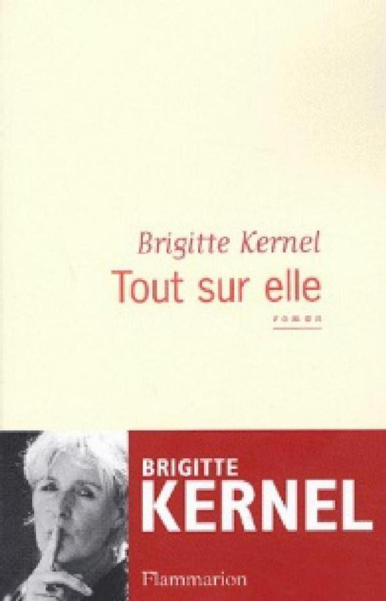

Brigitte Kernel
Tout sur elle
Flammarion
Maison d’édition :
Flammarion
© éditions Flammarion, 2003
Dépôt légal : avril 2003
ISBN numérique : 978-2-08-129412-7
ISBN du PDF web : 978-2-08-129417-2
Le livre a été imprimé sous les références :
ISBN : 978-2-08-068458-5
Le format ePub a été préparé par Isako (www.isako.com)
"La suivre est un exercice délicat mais jouissif, du muscle et du temps, voilà ce qu'il faut, respiration souple, sens de l'observation, je m'offre à fond et je l'aurai. Elle ne m'échappera pas, ne quittera pas mon esprit, je lui interdit."
Dans les couloirs du métro, dans la rue, derrière des lunettes sombres ou les pages froissées d'un journal, une femme suit une autre femme. S'agit-il de sa rivale, de sa psy, de son amante? Comme un oiseau de proie, elle avance dans l'ombre de ses pas. Jusqu'où la menera cette traque haletante et mystérieuse?
© Ph. Matsas/Opale
Brigitte Kernel est critique littéraire à Femme Actuelle et productrice à France Inter où elle anime les émissions Noctiluque et Un été d'écrivain. Elle a déjà publié plusieurs romans dont Une journée dans la vie d'Annie Moore, Prix Paul Guth du premier roman, et , chez Flammarion, Autobiographie d'une tueuse.
Table des matières
Couverture
Titre
Copyright
Table des matières
Première Partie - Où es-tu ?
Chapitre 1
Chapitre 2
Chapitre 3
Chapitre 4
Chapitre 5
Chapitre 6
Chapitre 7
Chapitre 8
Chapitre 9
Chapitre 10
Deuxième partie - Cinq mois plus tard
Chapitre 1
Chapitre 2
Chapitre 3
Chapitre 4
Chapitre 5
Chapitre 6
Chapitre 7
Chapitre 7
Chapitre 9
Chapitre 10
Chapitre 11
Chapitre 12
Chapitre 13
Chapitre 14
Épilogue - Elle savait tout de moi
Transfert
« Douloureuses, pénibles alternances. La vie est là. Elle palpite – douce, tiède, paisible – ou bien jaillit, ruisselle, bouillonne. Et pour une raison quelconque, subitement, elle n'est plus là. Cette sensation que mon sang a fui. Que me voici mutilé. »
« Non pas chercher à faire, mais se laisser faire, s'effacer, accepter d'être dominé, d'être conduit là où l'on ne prévoyait pas d'aller. »
Charles Juliet
Lueur après labour, Journal III.
Première Partie
Où es-tu ?
J'aurais dû lui offrir un chiot comme cadeau d'adieu, elle m'aurait retenue.
Où es-tu ma beauté ?
À vue de naseaux, là, à droite.
Animal, renard ou loup, je suis de poils et d'oreilles dressés, un chasseur, la truffe ras le sol, les naseaux frémissants. Retrouver ma proie, la poule, l'empêcher de fuir, de disparaître. Rester cynique, ne plus ressentir d'émotion, oublier la pluie, l'eau glacée qui dégouline le long de l'échine, se baisser, viser ses jambes, humer son odeur ; son haleine, un souvenir ; le souvenir doit disparaître, je la veux au présent. Ne pas me planter. Ne pas la perdre. Poser mes pieds dans les marques qu'abandonnent ses semelles de crêpe sur le bitume mouillé. Ne pas glisser, ne pas m'affoler, être précise dans chacun de mes mouvements ; coordination maximum ; sang-froid.
La suivre est un exercice délicat mais jouissif, du muscle et du temps, voilà ce qu'il faut, respiration souple, sens de l'observation, perdu dix kilos en un mois, je m'offre à fond et je l'aurai. Elle ne m'échappera pas, ne quittera pas mon esprit, je le lui interdis.
Plus elle m'échappe, plus elle est belle.
Plus elle est belle, moins je comprends.
Mon corps est à l'affût, il travaille pour moi. Son parfum, là, Heure bleue, c'est magique je la sens, elle me parvient dans son intimité la plus profonde, Guerlain au milieu de toutes ces odeurs fétides et sucrées qui flottent dans ce marché ; fumets de viande, pain chaud, fruits pourris dans les cageots, épices qui me rappellent une île lointaine, Sainte-Lucie ? Les Saintes ? Marie-Galante ? Mes narines se dilatent, identifient. Je me transforme, étrange sensation. Mon sang afflue. En apnée quelques secondes, je hume, mon front se plisse, mes muscles se contractent.
Animale. Loup, renard et pourquoi pas chacal ou hyène ?
Paris pleut gris de pollution. Elle s'en moque. S'engouffre dans une bouche de métro, descend les escaliers en sautillant, se mélange aux voyageurs ; ses cheveux blonds flottent dans le courant d'air glacé qui saisit mon ventre, mes cuisses, ma peur.
Filer quelqu'un n'est pas aisé. Chaque seconde est une mine antipersonnel qui peut vous éclater en pleine gueule. Si elle se retourne, m'aperçoit, terminé. Les jambes coupées, sciées, les os cassés, il faudra fuir, me terrer.
Mon blouson me protège, elle ne le connaît pas, je l'ai acheté ce matin. Coup du sort : j'ai préféré le look guerre du Golfe, parka en toile kaki zébré de beige et de brun au simple blouson bleu marine proposé par le vendeur. Un capuchon, c'est le capuchon qui m'a décidée ; la seule manière d'opérer incognito, le visage camouflé.
Elle marche, je transpire quatre mètres derrière elle ; chaud, trop chaud, pas le temps de m'essuyer les tempes, les joues. Je suinte le fauve. Je la regarde, mon ventre se noue, j'ai mal, aussi mal qu'avant les règles, mon bras droit se pose tout seul sur mon abdomen et le protège. Elle se retourne et sourit à un jeune homme, il vient de la frôler, elle a eu peur. Trouillomètre à zéro, elle serre son sac à main contre sa hanche, plus fermement. Son visage m'apparaît, ses yeux risquent de darder leur fiel sur moi, leur douceur, leur amour, je ne sais plus ; je l'ai aimée, détestée, rejetée, tant regrettée.
Vite, me fondre dans le décor, un pilier, rien de moi n'en dépasse, bon endroit pour la surveiller.
Qu'est-ce qu'elle fabrique ?
Elle stoppe net devant le plan immense, la carte du métro. Je respire mal. Son index se promène sur une ligne verte, bordel mais où elle va ? D'aussi loin impossible de lire ce qu'elle mémorise – la direction, le changement de station et le reste. Je ne suis pas flic, pas moyen de relever ses empreintes. Son doigt s'arrête au milieu du plan ? Châtelet ? Oui, mais après ? Toutes les correspondances se situent au cœur de la ville, toc toc toc toc, ça bat, les métros abondent dans les artères, le nombre de pulsations minutes est impossible à évaluer, toc toc toc toc, mes tempes s'emballent, mal au crâne, mais rien à foutre, bien plus mal dans ma chair, dans ma peau à cause d'elle, cette gueuse.
Que pense-t-elle ? « Après Châtelet, direction Clignancourt » ? ou « direction Opéra » ? ou « je descends là, je prends le bus » ? Et dans ce cas, quel bus ?
Comment réfléchit-elle ? Au présent ou au passé ? Pense-t-elle à moi en s'insinuant dans cette voûte carrelée ?
Pense-t-elle encore à moi ?
Sa nuque fine se courbe vers l'avant, petite nuque d'oiseau. Ses cheveux, elle les a remontés en un chignon nid de merle. Chichi, le chignon, ce qu'elle peut avoir l'air conne cul serré. Qui s'intéresserait à elle ? Qui, à part moi ? Elle n'est pas maigre, ça non, belle dans ses rondeurs, je crois dans ses... combien...? 70, 75 kg ? Racée, ça c'est certain. Si elle était un chien, elle serait cocker américain, avec la robe et la houppette sur le crâne, les cils longs, dodue, carrée. Entretenue. Au poil près. Toiletteur tous les mois pour le toutou.
Duvet dans la nuque gracile. Je me souviens. Je ferme les yeux. J'imagine, facile. Un petit « crac » et puis le cou retombe, pas besoin d'être un gros costaud pour lui briser les vertèbres supérieures. Entre deux doigts « cric crac ».
L'éliminer, aller à son enterrement, voir la gueule des autres, ceux qui l'aiment et dont elle se tape ; voir la tête et le chagrin de son connard de mari ; l'imaginer dans la boîte capitonnée, baiser son cercueil et me signer, pleurer. Jamais je ne supporterais qu'elle soit morte et pourtant je la voudrais tellement « disparue ». Cric crac.
Ce chignon comme plus un coiffeur n'en fait, pas fashion la proie, poussiéreuse. « Poussière, redeviendra poussière. » Je chantonne.
Tout en elle est volatile.
C'est le problème, mon problème.
Elle s'évapore si vite ; si souvent me laisse pantoise derrière elle à me dégingander sur la pointe des pieds pour tenter de la retrouver quelque part dans la foule. Je me dresse. Il me faut, j'en ai besoin, apercevoir la tache bleue de son imperméable, le blond de ses cheveux. Mais elles sont si nombreuses à être blondes dans cette ville. Paris capitale, pari raté si ça continue ainsi.
Je n'y arriverai jamais, forcément elle va se retourner, me découvrir cachée dans ma guerre du Golfe à capuche, me balancer : « Ça suffit maintenant, il faut me laisser ! » Fâchée tout rouge la belle.
Le ticket de métro. Elle le brandit comme une carte de visite, le fait glisser dans la fente du tourniquet ; il réapparaît, composté, à quelques centimètres. D'un coup de hanche, elle pousse la barre métallique qui joue au poste-frontière, reprend sa marche dans le couloir le long des affiches colorées qui vantent les mérites d'un ordinateur nouvelle génération, d'un film césarisé, d'un club de gym « promotion cinquante pour cent sur six mois aux mille premiers abonnés ». Elle fixe chaque affiche, ralentit parfois son allure, s'arrête puis repart sans avoir rien noté, ni références, ni numéro de téléphone. Que cherche-t-elle à acheter, à voir ? Pourquoi cet intérêt pour les immenses panneaux publicitaires que les couloirs du métro exposent ; une galerie contemporaine ; la pub tel un clignotant, une lumière qui l'attire comme de nuit le papillon sur la lampe extérieure des maisons.
Je me raidis. Mon front paraît s'étrécir.
Qu'est-ce qu'elle fait ?
La voilà qui s'emballe et court droit devant elle, tourne enfin sur la gauche, manque de trébucher, s'accroche à une colonne et s'affole à nouveau. Ses semelles de crêpe ne claquent pas sur le carrelage, mes talons en plastique martèlent le sol. Décidément nous ne sommes jamais en phase.
Je regarde le cadran de ma montre « non, pas en retard » ou alors quelque chose a changé dans sa vie. Je connais par cœur la géographie de ses activités, un territoire balisé, rien n'en dépasse. Cadrée à mort. Peur de l'au-delà des limites de son dessin de vie. Ni surprise, ni risque dans son domaine, discipliner la vie, les gens, ses propres gestes, ses pensées. Elle est bonzaï. Le coup de foudre, elle connaît pas. Le subit mais le terrasse aussitôt. Maîtresse femme. Du moins le croit-elle, le veut-elle.
Ne pas la perdre, ne pas la perdre. Vite ma carte Orange. Oui, d'accord, ta carte Orange, mais où l'as-tu fourrée ? Je m'interroge et me réponds en parallèle, une pensée en double fil, fils électriques, le bleu, le rouge, le courant passe mais si la bombe explose ? La bombe, elle qui se retourne, elle qui chausse ses lunettes pour voir si c'est bien moi, si elle ne rêve pas, pince-toi ma chérie. La bombe, elle hurle, les passants se jettent sur moi, les flics arrivent. Il y a mille formes d'explosifs. Un simple regard d'elle peut en être un.
Bombe. Je refuse. Pas une seconde de perdue entre deux interrogations.
Je me hausse sur la pointe des pieds, la gazelle a disparu. Mes paupières se ferment. J'imagine. Elle doit déjà s'asseoir sur un banc, attendre un métro dans une autre station, reprendre sa lecture du livre commencé hier Vingt-quatre heures de la vie d'une femme de Zweig. Le titre lui colle à la peau et me plaît sauf que ce n'est pas vingt-quatre heures que la filerai mais toute une vie si elle ne fait pas ce que je veux, ce que j'exige.
Une lutte, la lutte, notre lutte.
Mon sac à main est une poubelle, tout se mélange, tout se confond, tampons hygiéniques, stylos, agenda, reçus de cartes bleues, publicités pour pizza. Index, annulaire, majeur, pouce, les petits soldats précipitent leurs mouvements, fouillent, paniquent. « Oh non ! » Pas de carte Orange. Oubliée à la maison et plus le temps d'acheter un ticket. Mes dents grincent en frottant les unes sur les autres, mauvais signe, je force ma mâchoire, je desserre l'étau et fais craquer mes maxillaires comme me l'a montré le dentiste la semaine dernière : « Vous allez faire exploser tous vos plombs à force de serrer comme ça, des tonnes, ça représente des tonnes de pression cette manie que vous avez prise. Il faudra couler un appareil, vous le mettrez en dormant. Vous avez des problèmes en ce moment, mademoiselle, des angoisses ? »
Sauter au-dessus de la barre, la meilleure solution. Derrière sa vitre épaisse le contrôleur rend la monnaie à une vieille dame, son nez touche presque le comptoir, buée, il ne fait pas attention à moi, je bondis, je suis panthère prête à harponner de ses griffes la gazelle. La haie métallique se franchit facilement.
Où est-elle ?
À gauche ou à droite ?
Des bruits de métro, des rames qui arrivent et stationnent, les portes s'ouvrent, la sonnerie qui annonce le départ. Je vais la paumer, non, pas ça, pas la perdre, je ne supporterais pas.
Où es-tu ? Je voudrais crier, appeler, hurler, hurler son nom, mais je n'y parviens pas.
Mes jambes se plient et se déplient, souple l'athlète dont les bracelets de pacotille cisaillent le poignet, la tension est si grande, les muscles tendus à l'extrême, j'épouse les courbes de la galerie, le sprint imprime sa constance sous mes doigts de pieds, marathon-woman, ampoule probable. M'en fous. Un homme sur ma ligne de course. « Oh mais qu'est-ce qu'il fait là ce con ? », je murmure en faisant claquer mes mâchoires, à « con », je n'hésite pas, je le heurte, le type tombe, sur sa valise ou son Caddie, je ne sais pas, un truc à roulettes, je ne me retourne pas, dix mètres, vingt mètres, j'y suis presque, presque à côté d'elle.
Mon sac me gêne à ballotter ainsi sur ma cuisse droite.
Dans deux secondes, bingo, je descends la rampe qu'elle vient d'emprunter et la retrouve sur le quai. Ne pas tomber dans les escaliers. Mal choisi mes chaussures ce matin. Elles n'adhèrent pas. Me repositionner dès demain en terme de baskets. Je ne suis pas équipée, décidément pas pro.
« Oh non ! », un nouvel obstacle, en forme de groupe d'adolescents à sac à dos, se présente, « dégagez les mecs », je me faufile, svelte, chat, cambrioleur, pickpocket, marathonienne, je ne change rien au rythme de ma course, n'évite hélas pas le coup de coude dans le ventre de la femme enceinte qui traîne au milieu du couloir. Dommage, je ne voulais pas. Je m'excuse sans me tourner vers elle. Je l'entends hurler : « Pouvez pas faire attention ! » Je continue ma route.
Où est-elle ?
Où es-tu ?
Est-ce toi là-bas ?
En cavale mon amour. Je ne la rattraperai jamais. Il le faut pourtant bien. L'arrêter.
Je l'ai perdue, je dois me le répéter, l'accepter.
Perdu son imperméable à carreaux verts et rouges. Perdu son visage d'ange joufflu, la peau tendue, bien ronde, les hanches larges à faire des bébés, pas une ride, la belle-fille idéale, tout ce qu'il y a selon moi de plus énervant chez une femme.
Perdue pour de bon. Mes yeux scrutent le quai sur lequel je suis prête à me laisser dégringoler en hurlant de rage, en déversant des larmes de gamine sur le pavé gris.
Où ?
Sur le quai d'en face ? Ailleurs ? Mais non, son parfum, il venait de là. Dissoute la silhouette. Je m'effondre contre un mur en me tenant le ventre. Mes tripes se nouent et claquent comme des balles de sniper sous ma peau tendue, gonflée, c'est la chiasse qui débarque, débandade de nœuds qui attaquent l'abdomen. Lutter contre cette attaque dont je connais depuis longtemps les contours, les reliefs, les pentes douces ou arides.
Serrer les fesses. S'asseoir. Se reprendre. Réviser mes plans. Admettre qu'elle patiente sur un autre quai ou a déjà filé dans une rame.
Personne sur le quai, juste cette bonne femme en jupe à pois qui pousse un Caddie rempli de cartons et de plastiques, une clodo. J'ai toujours ressenti un amour fou pour les clodos.
Je me coule et m'abandonne dans les formes rondes d'un banc en résine vert sans cesser de me délecter de la clodo, comprime mon ventre à l'horizontale contre mes cuisses relevées, pieds posés sur l'extrémité de l'assise du siège. « Je te retrouverai, je te retrouverai », je ne peux m'empêcher de le murmurer, de ressasser.
Mes joues dans mes mains et mes coudes sur les genoux. « Se replier sur soi-même redonne chance au fœtus que l'on a été et qui reste en notre mémoire inconsciente. » Je me souviens qu'elle m'a dit ça un jour. À force de lire, elle raconte n'importe quoi. Elle se prend pour une intello. Donneuse de leçons. Je te préfère quand tu prends mes mains en me regardant dans les yeux. Que ne t'ai-je dit que je voudrais que tu oublies. Tu sais tout de moi, je sais si peu de choses de toi. Injustice, cruelle injustice qui me lance à ta poursuite : tu en as trop entendu. J'avais confiance. Plus maintenant.
Un métro, je me déplie, j'essuie mes larmes d'un revers de manche. Elle a pris la rame précédente, je m'en persuade, je ressasse, pourquoi me serais-je trompée de galerie, pas un chasseur comme moi, son parfum, je n'ai pas pu faire erreur, impossible ou alors... je ne vaux rien.
Envie de me baffer, j'ai encore raté mon coup. Six fois en une semaine que je la paume. Trop rapide, la petite souris sur ses talons plats. Je recommencerai demain, planifierai ce soir ma filature.
Mieux s'organiser. Chaque seconde est alliée ou ennemie. Apprivoiser le temps, le dompter, éviter les pas perdus, mettre des lunettes s'il le faut.
Et si j'étais devenue myope d'un coup, comme d'autres se font des cheveux blancs en une nuit après un drame.
Mais maintenant ?
Reprendre une rame ?
Foncer vers Châtelet, le petit point sur la carte où elle baladait son index ?
Approximatif.
Non chef, oui chef. Yes Sir, no Sir.
Mon cerveau reprend les commandes. Plus mal au ventre. Rentrer à la maison. Recommencer demain.
Je n'ai pas obéi. Obéi, obéi, obéi, et puis quoi encore ?
Je check-liste son plan d'atterrissage, tu voulais me poser sur une belle piste plane, n'est-ce pas ? Pas d'embrouille, pas de bêtise – tu adorais, chérie, ce mot « bêtise », tu suçais ce mot, bêtise, bêtise de Cambrai, tu me disais « plus de bêtise » en regardant mes mains, mon nez, mon profil, mes yeux, le grain de ma peau, tu pensais « je t'aime », tu ne prononçais pas ces simples mots qui m'auraient soulagée, tu aurais dû. En manque, je suis en manque de toi.
Tes conseils, des exigences, des Scud à éviter ; plus de joints ; ne jamais garder de shit à la maison ; ne pas me bourrer d'anxiolytiques ; manger sain ; cesser de faire ma maligne en société en proposant un pétard ; me réveiller plus tôt ; travailler plus sereinement ; être plus attentive aux gestes et paroles de Louis, mon amour, Louis.
Et toutes ces conneries que tu prononçais à voix basse comme si j'allais mourir, si tu allais me perdre. Tu m'adorais. Mais la peur, ces chauve-souris au fond de tes pupilles et qui se dilataient, dilataient, ouvraient leurs noires ailes. Toi, aussi précieuse que la musique de Björk, aussi profonde et pure.
Peur de quoi, de quoi as-tu eu peur ?
Qu'est-ce que tu fabriques à toujours voir le pire ?
Le pire pour moi, c'était : rompre, casser, plus de rendez-vous secrets. Mais tu l'as fait.
Tu m'as balancée.
Tu disais « ne plus rien pouvoir pour moi, il me fallait voir quelqu'un d'autre ». Tu n'osais pas me dire, simplement : « J'en ai marre. »
Tu te sens mieux, hein ? j'en suis certaine, je devenais chewing-gum collé à tes basques, la bouche fraise Tagada quand je te regardais. Le crapaud qui bavait, l'image que tu avais de moi ?
C'est ça ?
Dans sa trace.
Vers l'Étoile.
Il pleut, c'est plus facile.
Elle ondule sur l'avenue, un parapluie au-dessus de la tête, bras tendu, contente d'elle ou pressée.
Le parapluie, encore un privilège, un cadeau siglé « les banquiers sont aimables ». Formule publicitaire inédite. Je ris toute seule, j'ai envie de pleurer, je voudrais foncer, me jeter sur elle, l'embrasser, sentir son corps contre le mien et murmurer enfin : « Pourquoi m'as-tu abandonnée ? » Maman tu es mon Dieu, nom de Dieu. J'ai perdu ma mère, ma vraie mère il y a deux décennies, un cancer foudroyant, tu ne l'ignorais pas, tu m'avais adoptée, non ? Quand on adopte un enfant, même adulte, on assume, ma vieille ! Tu n'as pas assumé ! Zéro de conduite.
Elle file maintenant, plus vite qu'un feu follet. Elle évite les flaques d'eau. Devant une boutique de fringues, s'arrête, sa main fouille la poche extérieure de son imperméable. Un portable. Toujours le même. Elle n'en a pas changé. Toujours la même femme et ses gestes rapides. Elle dégaine, colle l'appareil contre sa joue, envie de coller mon nez sur cette joue.
Elle répond, téléphone contre l'oreille. Se réfugie sous la porte du magasin et parle, parle, parle. Blabla blabla. À qui ? Mais qu'est-ce que tu racontes ? Peu de mots à saisir à la volée, pas d'anecdotes à retenir, je n'entends rien ou si peu.
Tu ne m'as jamais vraiment parlé de toi, juste une anecdote en passant. Le vide. Le mystère complet. Désormais il me faut tout apprendre, je devrais dire réapprendre car j'ai si bien su, si bien connu chacun de tes mouvements, si bien compris chacune de tes paroles alors que tu ne t'intéressais qu'à moi, uniquement à moi. Me reconnaître ne te fut pas facile. Je comprends, je t'en veux.
La voilà qui raccroche, range son mobile, replie son parapluie de la main gauche.
Elle se retourne, attirée sans doute par la lumière que la Grande Roue au bout des Champs-Élysées diffuse dans l'avenue. Tétanie générale à bord, je perds mes moyens, je m'insulte :
« Reprends-toi, tu auras pire à vivre, elle t'en fera voir d'autres. »
À un poil près, elle me surprenait en train de la reluquer devant le magasin. Derrière ce gros bonhomme, là, l'obèse en blouson gris, celui qui a des bajoues et qui ressemble à un hamster jovial, oui, celui-là... je me tasse en resserrant mon capuchon sur mon crâne, y enfouissant la moitié de mon visage. Un jeune homme, cintres vides au bout des doigts, me fixe, me sourit. Dans son sourire une complicité, je n'ai pas envie de savoir à quel genre appartient ce regard.
Les cintres comme alibi.
Il faudrait qu'un jour je me déguise en vendeuse, perruque sur la tête, lentilles de contact bleues, rouge à lèvres, je m'y vois, je l'approcherais :
– Je peux vous aider, madame ?
Elle ferait « non » d'un simple mouvement de tête, je la persuaderais, des soutiens-gorge en promo, elle devrait essayer, je la materais en train de se déshabiller, elle essayerait le soutien-gorge, je m'amuserais. Cette fois je l'aurais piégée, peut-être retirerais-je d'un coup la perruque, juste au moment où elle serait à poil ! À ma merci ! Ma merci de chasseur ! La proie ne peut pas se débattre ! Moches les seins ! Super mal à l'aise ma jolie, à ma merci ! Mais suis-je capable d'exécuter ce plan ?
J'en suis consciente, ce serait l'idéal, beaucoup de vendeuses ici, impossible de me faire démasquer et puis ça ne durerait qu'une demi-heure. Une demi-heure de bonheur. Le gibier dans la besace, sa trouille et sa honte dans ma boîte à souvenirs. Ensuite je me raconterais la scène au moment de dormir, je rirais c'est certain, je ne chialerais plus à cause d'elle. « Avec des si, avec des ça », comment disait ma grand-mère, je ne me souviens plus. « Avec des si, avec des ça, on mettrait une brebis en bouteille. »
Elle raccroche, range le portable, agite le parapluie, une manie, entre dans le magasin avec son air de bourgeoise qui fait fuir les vendeuses, cet air que je ne lui connaissais pas avant mes filatures, un air découvert il y a quelques semaines, un air de « on ne me tape pas sur le ventre, ne m'approchez pas, ne jouez pas à la vendeuse, en un regard je sais tout de vous, je suis suffisamment influente pour vous faire virer, l'argent n'est pas un problème, je peux m'offrir ce que je veux ». Pas bourgeoise, nouveau riche. Peu importe. Je ne veux pas de ce monde de cul coincé chez moi, dans ma tête, mais alors bordel pourquoi j'insiste autant, pourquoi persister dans mon œuvre ?
Le gros homme marche doucement. Sa moustache est énorme. Dur dur de mouvoir cette graisse. Allez vas-y, t'es un bon gars, ça se voit mais tu bouffes trop de pizzas, tu vas en crever, pas à moi de te le dire, hélas et tant mieux.
Je reste derrière toi, hamster jovial, mon paravent. Regarde, elle déboutonne son imper. Non, tu ne regardes pas, tu t'en tapes, tu as raison le hamster. Elle ne vaut rien, elle ne te ferait que du mal.
Son imperméable sur son bras la gêne, elle s'arrête, remet en place le vêtement, redresse la tête, fronce les sourcils, dans son esprit un doute, une interrogation ? Que se passe-t-il dans son disque dur ? Sent-elle ma présence dans son dos, regard fixé sur sa nuque ?
Je vire sur la gauche, réajuste une nouvelle fois ma capuche, garde mes lunettes de soleil.
Elle reprend son allure, déhanche ma salope, vas-y, allume hamster jovial, il ne manquerait plus que cela à ton palmarès, un gros beau-père pour tes gosses hamsters joviaux, et qui les prendrait sur les genoux et qui jouerait au crapaud ou au bœuf à la demande, c'est sûr pour te garder, il ferait n'importe quoi.
Alouette, alouette, la mélodie revient. Je me sens bien à te filer, toi, mon adoptante.
C'est la première fois que je file, sereine dans ce job que je me suis imposée. Non, pas « que je me suis imposée ». « Qui s'est imposé à moi », je n'avais plus le choix.
Aujourd'hui heureuse de la poursuivre, d'emmagasiner chacune de ses sorties, chacune de ses manies, chacun de ses vêtements. Libre, je suis plus libre. Un oiseau. Un avion de chasse. Je ne sais pas.
Impression de m'amuser avec des pétards ou un flingue. Drôle le flingue, super les pétards, on manipule, c'est froid, c'est mou, roulette russe, je vais me reprendre en pleine gueule cette bonne femme, ça va mal se finir, reprends-toi ma fille, reprends-toi ma petite, cesse de jouer, la vie, c'est la vraie vie, tu la files parce que tu veux savoir, quand tu sauras, tu agiras.
OK ? Yes Sir ! Répète Yes Sir, Oui, Sir, laisse ton esprit diriger ton corps, ce corps qui fera l'amour ce soir en chassant l'image de la belle. Tu fais mieux l'amour depuis que tu la files. Un bonheur, les jambes écartées en fin de journée et Louis qui ne se doute de rien.
Les autres filatures furent pénibles. Toujours les mines antipersonnel, la bombe à l'esprit. Aujourd'hui, en cette seconde, je suis prête à me laisser surprendre, amusant, je ne pouvais pas imaginer hier que je pourrais connaître semblable sensation, celle d'être découverte. Stupide, mais c'est ainsi.
Des courses, elle veut faire des courses. Qu'est-ce qu'elle va acheter ce coup-ci ? Encore des conneries. Elle dépense trop d'argent.
Rayon lingerie masculine, il ne manquait plus que ça. Elle s'arrête devant les T-shirts d'hommes, des T-shirts à encolure haute. Pour qui ? Bleu pâle, blanc, elle hésite. Met son index sur ses lèvres, une sorte de chut, son hésitation, elle fait souvent ce geste.
Une vendeuse s'approche. Elle hoche la tête à l'horizontale, du type « non, non, pas besoin d'aide, je me débrouille ». La vendeuse tourne plusieurs fois sur elle-même, cherche une autre cliente à séduire, vendre, il faut vendre, du chiffre, encore du chiffre sinon on dépose le bilan.
Elle me voit, me fixe, trop longues ces minutes où les pupilles de la vendeuse dardent les miennes. Celle-là m'a repérée. Elle sent que je file la poule. Elle sait, elle a perçu le renard. Elle a peur pour sa cliente.
Elle s'approche de moi. Sa blouse est ridicule. Un badge sur la poitrine : « Margarett ». Un pseudo ? Les vendeuses prennent des pseudo maintenant ? C'est nouveau ça.
Que crains-tu Margarett ? Que je sois kamikaze, bardée d'explosifs ? Tu regardes trop les infos. Remarque ce pourrait être un truc. Merci Margarett tu viens de me pourvoir en rébellion. Se faire exploser en plein grand magasin pour l'éliminer elle, ta cliente ! Pas mal ! On ne retrouvera rien de mon corps, les infos parleront d'attentats, je deviendrai une star... mais personne pour être fière de moi.
C'est débile, je deviens débile, folle peut-être, à cause d'elle, à cause de ces nuits sans sommeil à rêver, rêver d'elle. Combien de matins me suis-je réveillée les joues ruisselantes de larmes, et cette chanson dans la tête. J'ai encore rêvé d'elle, j'en ai rêvé si fort que les draps s'en souviennent ? Je ne suis pas un homme, la couette ne se souvient de rien et puis cette confusion, je suis consciente, agrég de lettres tout de même, ça me rassure sur moi-même et Louis mon mec, l'intello architecte de l'agence Architop, des gages de bonne santé mentale, non ?
C'est reparti, je tombe dans le vide, tout s'embrouille, ce mot « maman » qui vient, en déferlante au milieu du jeu de quilles. « Un chien au milieu d'un jeu de quilles », riait ma grand-mère ; elle et moi, deux clebs au milieu d'un jeu de quilles. Non, je dis n'importe quoi. Je pars en vrille. « En sucette », dit Louis. J'aime cette expression dans la bouche de Louis.
Me reprendre. Yes sir. No Sir. En avant marche. Relever la tête, bordel. Menton en avant. Pas d'état d'âme. Yes sir. No sir.
Impossible de bien gérer ce sentiment, cette haine, je te hais, tu m'as balancée comme une vieille chaussette après m'avoir tout pris. Maman, mon amour, mon amie, mon ennemie. Je suis malade, complètement malade, comme quand ma mère sortait le soir et qu'elle me laissait seule avec mon désespoir, je suis malade, complètement malade. Chantonner encore et encore, ça me calme. Enfin presque.
Elle recule, se tourne vers Margarett, l'appelle, oui elle a besoin d'elle. J'entends « XL en bleu layette ». La vendeuse à nouveau tourne le visage vers moi et me fixe. Bon ça va, j'ai compris que tu as compris ou que tu commences à te raconter de histoires. Lâche-moi Margarett, on fait un deal. OK, j'enlève mes lunettes noires et mon capuchon, tu verras en dessous une jeune fille proprette, la raie bien sur le côté, juste ce piercing sous la lèvre qui te fera peur mais j'ouvrirai mon blouson guerre du Golfe et là, Margarett entends-moi, ne quitte pas mon regard, tu découvriras un jean propre et un pull en cachemire. Piqué, c'est vrai, à mon père mais ça tu ne le sais pas. Jeune fille de bonne famille ; ton kamikaze vient des beaux quartiers et s'est tapé l'École alsacienne quelques années. Deux générations et tout s'est arrangé dans la famille. On ne parle plus du grand-père clochard qui puait la mirabelle mais qui avait la mer, le bleu des Antilles, dans les yeux. Enfin, on n'en parle presque plus, ne restent que les vieux secrets, ceux que cette femme blonde, elle, là devant toi, dans le rayon XL bleu layette, connaît par cœur.
Hé ! Stop-là ! Si tu continues comme ça Margarett, tu vas me faire repérer, elle me découvrira. Allez, sois sympa, oublie-moi.
J'entrouvre mon blouson, le pull en cachemire affiche sa qualité, je dégage aussi vite capuche et lunettes. Un regard, Margarett me déshabille en une seconde, calcule ce que valent mes vêtements, fixe les Prada, chères les Prada, ce modèle 3 000 balles, elle compte encore en francs, elle ajoute le cachemire, léger, deux fils quand même 1 000 balles, le jean, elle s'en tape, pas plus de 300 balles, du GAP pas de doute, elle est rassurée la Margarett, elle a identifié, un ordinateur dans sa tête de vendeuse « qui connaît les prix », me voilà étiquetée : « Jeune fille de bonne famille, ses parents doivent mal supporter le piercing sous la lèvre inférieure, mais quoi, 29, 30 ans, c'est la mode, dans deux ans elle l'enlève, un mari, trois gosses, elle sera économiste ou médecin, généraliste non ! Euh... dentiste, non... euh... orthopédiste... non, euh ? Psy, elle sera psy la môme. » Voilà ce que pense Margarett, ma main à couper. Pas con.
Margarett m'oublie. Je ne suis qu'une commune parmi les communes filles à papa qui s'habillent ici. Si elle va plus loin dans sa projection, elle pourra aussi m'imaginer dans une école de commerce ou bien encore, tiens c'est pas mal, avocate chez un ami de la famille qui supporte le piercing. Merci chérie. Tu te goures et de loin. Si tu savais... Je suis une mafieuse qui s'est chargée d'un contrat si particulier. Ta cliente est la proie. Tu ne peux rien pour elle. Tu n'avais qu'à pas me juger sur ma mise à 5 000 balles. Ça fait quoi en euros, ça ?
Je suis un superdétective. Je commence à avoir de l'expérience. Un mois de filature, ça vous forme un homme, pardon une femme. Voilà ce que je pense.
C'est l'heure. Là voilà, comme tous les matins, emmitouflée dans une doudoune noire qui cache ses formes de bourgeoise engoncée dans « du tissus classique, de qualité, qui franchit les années » ainsi que j'ai entendu une vendeuse lui parler avant-hier. Elle aime les fringues, je n'aurais jamais cru. Elle m'a aussi caché ça.
Panique à bord. J'ouvre Libération, écarte les bras au maximum derrière mon paravent ; dans tous les mauvais téléfilms le coup classique du détective qui se planque.
Je n'ai pour l'instant pas étudié meilleure solution.
Je ne suis pas dans un film mais j'en adopte les ficelles les plus faciles. Non, je ne suis pas un polar à moi seule, avec elle en devant de scène, en fil conducteur. Je me le répète, je ne suis pas un polar, je suis dans la vraie vie, je ne disjoncte pas, je ne suis pas dingue, je poursuis une histoire qui n'aurait jamais dû s'achever. Qu'on se le dise !
Son parfum, plus présent qu'hier dans le métro, le spray du matin à grands coups pour que ça tienne toute la journée, je rêve, images d'elle devant un miroir, elle se maquille.
Quelle marque de crème anti-âge ?
Quel genre de poudre et d'eye-liner ?
Comment place-t-elle son coude, vers le haut ou vers le bas lorsqu'elle souligne sa paupière inférieure de ce léger, si léger trait de khôl ?
Heure bleue de Guerlain. La première chose que j'aie sue d'elle.
Un nourrisson reconnaît à cent mètres l'odeur de sa mère.
J'en suis là, au concept « mère » et n'en ai rien à foutre.
Je l'aurai de toute façon.
De toutes façons.
Je lis mais je ne lis pas. Je parcours les lignes d'un article intitulé « Kaboul rave », je ne mémorise pas. Je regarde au-dessus du journal. En biais, elle ne peut pas m'apercevoir, moins encore me reconnaître. Je me rassure tant bien que mal, pense à très grande vitesse, sur plusieurs niveaux : « Mon bonnet à rayures rouges et vertes ne lui a jamais été présenté ; mes lunettes de soleil cachent mes yeux, mes sourcils, une partie de mon nez. Et puis le col roulé, jamais elle ne m'a vue avec un col roulé, je jurerais même lui avoir révélé lors de nos premières rencontres que je détestais ça. Le rouge à lèvres... évidemment, je suis maquillée comme une voiture volée, mais n'est-ce point la seule solution pour cacher cette bouche, ces lèvres qu'elle connaît trop bien, qu'elle a regardées si souvent vibrer, trembler, sourire, gémir.
Elle s'assoit au bar, comme d'habitude, pose ses coudes sur le comptoir comme d'habitude, et caresse comme d'habitude le cuivre lustré au Coca-Cola. Elle relève le menton, s'apprécie dans le miroir immense qui surplombe le bar, étale son blush Terra Cota sur ses joues, un ou deux coups de paume des doigts, rabat en arrière une mèche de cheveux rebelle, se redresse, ouvre sa doudoune, offre son décolleté au barman qui ausculte les points culminants de son anatomie. Un sourire, il s'élance :
– Ah, madame Tilleul, toujours à l'heure pour votre rendez-vous café-croissant.
– Alors ?
– La même chose.
Et elle se plonge dans Libé, j'aimerais que nous lisions le même article en même temps mais impossible de voir le titre qui a arrêté son attention.
Autrefois, il y a un mois, nous respirions en même temps, yeux dans les yeux, connectées, tu étais ma magicienne.
Café, croissant, huit heures pétantes, Libé, rien de nouveau sous les cocotiers en aluminium brossé du Palace Café.
Je calcule : trente matins moins les weekends soit moins huit donc vingt-deux jours ; vingt-deux jours que je marche dans ses talons ou que je l'attends là, exactement là où elle va forcément se rendre.
Je connais son emploi du temps par cœur. Pas plus charentaise qu'elle ; ni excès, ni folie. Carré, coupé au rasoir son quotidien ; pas une mèche, rien ne dépasse ; ça devient lassant.
« Finalement, tiens, me dis-je, quand elle m'échappe, c'est plus drôle, au moins il se passe quelque chose. »
Mes bras fatiguent, Libération est léger mais difficile à brandir une demi-heure à bout de bras. Mon col roulé me gratte.
Elle va bientôt le finir son croissant cette conne ?
Elle règle sa consommation, ne laisse pas de pourboire, referme méticuleusement son porte-monnaie orange, prend le temps de le placer dans son sac à main avant de bouger son gros cul du tabouret ; maniaque, ce n'est pas une nouveauté.
Il faut que je trouve le bon moment pour agir, mais avant : tout savoir d'elle, de sa double vie.
Elle avale son expresso comme s'il s'agissait d'un café turc, se délectant du parfum infâme laissé par le produit d'entretien dans les boyaux de la machine. Repose sa tasse. Retire un sucre de son emballage. Le fourre dans sa bouche. Elle fait tout à l'envers. Enfin, normal, c'est l'heure, ce sera toujours l'heure, elle susurre en se penchant vers le garçon et son patron :
– Au revoir, à demain messieurs.
– Au revoir, madame Tilleul, à demain.
– À demain.
Et ne referme pas la porte vitrée derrière elle. Le froid s'engouffre dans le café, une marée déferlante, glaciale qui saisit les os avant même d'entamer la chair. Le patron se précipite, son abdomen le devance : « Quelle chieuse celle-là, pas un pourliche et toujours cette satanée porte qu'elle laisse en branle, rien à foutre des autres, qu'on attrape la crève, moins sept degrés, elle en a rien à battre » et il boucle sa boutique ; de la rage dans l'horizon de ses pupilles dilatées.
Je compte, deux, trois, quatre, comme chaque matin, à cinq me lève, la pièce est prête depuis une demi-heure au creux de ma paume droite, deux euros, je la pose sur la table, abandonne Libé et me remets en chasse.
Je sors, referme le battant de verre fumé sur moi, tourne à gauche, l'aperçois traverser le carrefour et s'engouffrer dans l'avenue.
Pas de panique. Je connais l'itinéraire par cœur.
Aujourd'hui peut-être...
Non je ne pourrai pas !
Sa doudoune flotte derrière elle comme un voile de mariée trop lourd, elle ressemble à un martinet qui n'arrive pas à décoller malgré le vent, ce vent qui s'engouffre sous mon imperméable et ralentit mes pas. Je me répète : faire la check-list avant de décoller, de la devancer, de pivoter devant elle, de l'aborder.
1. Dire : « Oh bonjour, quelle surprise. »
2. Demeurer statique devant elle.
4. Ne pas répondre à : « Comment ça va, quelle surprise. »
5. Balancer dans la seconde mon Scud : « J'arrive. »
6. Elle me répondra : « Certainement pas. » Une expression qu'elle aime, « certainement pas ».
Non, tout reprendre à zéro, non à 4...
4. Tout de suite : La forcer à accepter quitte à coller, à scotcher son allure.
5. M'introduire dans son bureau comme son ombre. Ombre de son ombre.
6. Tout déballer vite fait.
7. Et pan et pan et pan les phrases assassines.
Je dois lui régler son compte, après ça ira mieux, toutes les conneries de la vie – le coucher du soleil, les baisers de Louis, une plaque de chocolat en regardant la télé, un bon plan ciné, les cancans du boulot, un gosse dans une poussette, nager dans les embruns –, toutes ces banalités reviendront illuminer mon visage, on me qualifiera à nouveau de « jolie », « aimable » et « si drôle ». Plus de « mais qu'est-ce qui se passe, tu es maigre comme un chat turc », « t'as les yeux creux ma vieille, il faut manger », et autres satanés « tu déprimes ou quoi, tu sais que tu peux tout me dire ».
Lui régler son compte. Dire, hurler : « Maman, je n'ai jamais réussi à t'appeler maman. »
J'aurais dû. Peut-être. Mais je ne savais plus raisonner. Articuler « maman ».
Je me positionne derrière un couple en manteau gris, des inséparables à coup sûr. Le paravent est essentiel lors d'une filature. Deux vaut mieux qu'un seul tu l'auras. L'homme et la femme avancent rapidement. Tout à fait ce qu'il me faut. Ils vont de front ; si elle se retourne, elle ne me verra pas. J'imite leur balancement de hanches.
Incroyable que les vieux amants finissent par se ressembler. Ceux-là devraient être mis sous cloche.
La Marseillaise, il ne manquait plus que cela, mon portable se met à égrener « enfants de la patrie », elle va forcément reconnaître la sonnerie, elle la connaît par cœur, combien de fois ai-je oublié d'éteindre mon téléphone portable lorsque nous étions, elle et moi, face à face, ensemble, réunies.
Je m'accroupis à même le bitume, des gens me dépassent qui ne comprennent pas, ils pensent sans doute que je suis en train de pisser en pleine rue.
Je n'oublie pas de la surveiller dans la forêt de jambes qui bougent devant moi, je ne distingue plus que ses mollets, le bas de sa doudoune, elle n'a pas ralenti, rien entendu.
J'explose d'un grand « ouf » en appuyant sur la touche OK du mobile.
– Allô ?
Je murmure, si elle m'entendait, on ne sait jamais.
– Tu es où ? je t'entends mal, hurle Louis dans le combiné.
– Dans le métro.
– Ça fonctionne dans le métro maintenant, je croyais que les portables ne passaient pas ?
– Je veux dire, j'articule énervée, que je sors du métro.
– Ah, je comprends mieux. Dis-moi tu en as pour combien de temps ?
– Une heure ou deux, ça dépend des transports.
– Tu es sûre que tu fais bien d'y aller ?
– Je ne peux pas rater une chance pareille.
– Oui... bien sûr... mais je m'interroge... Ça fait des mois que ça dure... Ça doit être une sacrée histoire...
– Sacrée histoire, oui...
– Que de déplacements et toujours rien d'achevé...
– Oui ?
– Écoute Louis, je suis en fin de batterie, je te rappelle après, d'accord ?
– D'accord.
Quand, je me relève, elle a évidemment disparu.
Chienne.
Je range mon téléphone dans ma poche droite, ne cesse plus de le palper, revolver prêt à dégainer. La douceur du métal ralentit mes tergiversations. Même pas envie de cloper. Je brandis mon poignet gauche : huit heures trente-deux.
Je ferme les yeux, j'imagine, pas besoin de boule de cristal, elle s'arrête devant la porte cochère, voilà...
Comme d'habitude à huit heures trente-deux, elle tape 76TY sur le digicode... Au boulot Estelle Tilleul. Toujours à l'heure, Mme Tilleul.
Estelle. Ton prénom. Je le répète, le chantonne, l'écris au crayon à papier dans mon agenda, le gomme, le réécris. Estelle, est-cet-elle ? Le décliner. Toujours la nuit quand tu dors.
À trente-deux et demi, le petit clic annonçant l'ouverture du saint des saints la mène vers l'escalier, il est maintenant trente-trois-trente. Au travail la belle. « Deuxième étage à droite, attention à la marche. » Elle répète quinze fois par jour cette phrase avec un léger accent de l'Est, elle ne s'en rend pas compte.
Tous les jours à huit heures trente-deux, la même chose, les mêmes mots.
Mes jambes se dérobent, je ne parviens pas à comprendre ce qui bat comme un cœur dans mon esprit, cette angoisse soudaine, cet Alien qui va exploser ma poitrine si ça continue... Cette phrase, huit mots, seize syllabes : « Deuxième étage à droite, attention à la marche », je ne supporte plus. « Deuxième étage à droite, attention à la marche », ce qu'elle a pu me le répéter. Comme si je ne savais pas. Comme si j'étais toute neuve dans sa vie. Comme les autres, sans suite possible.
« Il faut savoir ne pas se vexer », répétait souvent maman.
J'étais rarement d'accord avec ma mère avant son cancer. Pendant « la longue maladie », je me suis mise à dire « oui » à tout. Ma mère, ma génitrice, j'adore prononcer son prénom, une caresse que ces syllabes : Lodie. Lodie comme Mélodie. J'ignore où ses parents, à cette époque, ont été chercher ça. Aucune sainte sur le calendrier ne figure à ce nom. Lodie, Lodie maman Lodie, mieux que maman Estelle. Estelle Tilleul, drôle de nom, mais c'est le tien, il me fait frissonner dès que je le murmure.
Je fixe le cadran de ma montre.
Estelle doit maintenant essuyer ses pieds sur le paillasson en forme de chat, abscons un gadget pareil et si peu digne d'elle mais c'est comme ça, elle ne m'a pas donné le choix du paillasson, je m'y suis râpé les semelles quelques milliers de fois, des préliminaires joyeux, parfois euphoriques.
Huit heures trente-six, là, j'imagine. Juré-craché-croix-de-bois-croix-de-fer, elle enfile sa clé dans la serrure, traverse le hall. Ses semelles se plient sur le parquet blond, elle s'infiltre dans son bureau, ouvre son agenda, attend, se couche un instant sur le canapé, soupire, bâille. Ce qu'elle peut bâiller cette femme ! Jamais constaté autant de bâillements en des laps de temps si courts.
Huit heures quarante, là je ne sais plus.
Elle travaille. Forcément.
Seul dernier élément en date : ce jeune homme roux qui vient la voir souvent, vers 9 heures et qui redescend en sifflotant une bonne heure plus tard comme un amant comblé. Je l'ai aperçu hier et avant-hier ayant réussi ma filature quotidienne. Rare que je la paume sur ce trajet.
J'entrouvre les yeux alors qu'une voix miaule :
– Ça ne va pas mademoiselle, vous avez un malaise ?
Une main sur mon épaule, je sors de mon rêve éveillé, du cinéma, abandonne la toile où, yeux fermés, se projette le film de ses deux vies. Une main inconnue.
– Vous êtes sûre que vous allez bien jeune fille, il fait froid, vous êtes immobile au milieu du trottoir et vous tremblez...
– Ah bon... mais je vous jure, ça va, madame.
– Vous aviez l'air de dormir debout et vous penchiez sur le côté, c'est étrange tout de même, non ?
– Sans doute !
– Vous êtes peut-être épileptique. Vous savez alors que rien dans la famille ne la prédisposait au « petit mal » comme l'appellent les médecins, ma petite-fille Caroline, la cadette, a chancelé un jour dans la rue comme ça, ça a commencé debout, les yeux fermés comme vous et elle s'est retrouvée par terre les yeux révulsés, bavant, tremblant et...
Elle s'interrompt, darde mes pupilles de ses craintes :
– Vous ne vous droguez pas au moins ?
– Non madame, non.
J'interromps la mamie en effleurant le dessus de sa main. Une caresse d'amitié. La vieillesse émeut ceux qui l'ont côtoyée enfant. Ma grand-mère, elle lui ressemble. Je ne parviens plus à dégager mon regard des joues douces et tendues et velues blanches, bonnes à embrasser. Mamy... Il faudrait tout de même que je te téléphone. Mais j'ai tant de boulot. Estelle Tilleul me vole tout mon temps.
Je lance :
– Vous êtes gentille.
Elle n'a pas l'air de comprendre, elle m'attrape par le bras, elle veut me sauver, appeler le SAMU, les pompiers, elle interpelle les passants
– Vous êtes docteur, vous êtes médecin, la petite va mal...
Je l'arrête dans ce qui me paraît être un délire, réalise que je dois vraiment avoir une drôle de tête, l'embrasse sur la joue.
Exactement comme je la voyais, cette joue : lisse, douce, duvet fin soyeux, agréable.
– Je vous remercie, madame, je ne suis pas malade, je réfléchissais, c'est tout.
– Ah vous réfléchissez comme ça vous, debout dans la foule, immobile, les yeux fermés ; tout ça en plein hiver...
– Oui, madame.
La vieille dame tape le bout de sa canne en rythme sur le trottoir et scande en regardant le bout de ses mocassins râpés :
– Ce que le monde peut changer. On ne prend plus le temps de rien. On n'attend pas le soir et pour parler à son mari et réfléchir à deux, on pense seul dans la rue, non mais où il va le monde ?
On dirait du rap. La musicalité, à cause de la canne sans doute... On ne prend plus le temps de rien / On n'attend pas le soir / Et pour parler à son mari / Et réfléchir à deux / On pense seul dans la rue / Non mais où il va le monde ?
Du rap d'octogénaire. Le nom du groupe serait Octo.
Je souris, cligne des yeux, évitant qu'ils ne se ferment, je ne veux pas la contrarier mais le rap revient... On ne prend plus le temps de rien / On n'attend pas le soir...
La vieille dame hausse les épaules et part à trois pattes vers l'église.
Je la regarde s'y engouffrer en cherchant à tâtons mon portable tombé dans la doublure de mon vêtement.
Un rayon de soleil réchauffe la joue sur laquelle je pose le combiné glacé :
– Allô Louis ?
– Oui.
– C'est moi, c'est annulé, je prends un taxi, je reviens.
– Non mais c'est quoi ce monde de fous, ça ne marche jamais.
– Je t'expliquerai.
– Quand est-ce que tu cesseras de te laisser faire ?
– Écoute Louis, je suis dans la rue, ce n'est pas évident de t'expliquer, des histoires de planning rotants...
– Quoi ?
– Rotatifs, enfin tournants, enfin meeerrrde !
– Mais pourquoi tu t'énerves, qu'est-ce que j'ai dit ?
– Rien, la pression Louis, rien que la pression, excuse-moi.
– Bon, allez rentre.
– OK.
Sa voix s'adoucit, Louis joue à l'ange-gardien, j'adore ça :
– Très bien, tu rentres et tu m'aides à finir mes plans.
– Euh...
– Il faut que je gagne ce concours, je suis charrette.
Et je hèle un taxi.
Heure bleue de Guerlain caresse mes narines. Souvenir ou réalité. Sans doute ce courant d'air qui l'a plaqué sur moi.
Raté, raté, raté, je n'y arriverai jamais, je dois chercher une autre solution, le matin ça ne marche jamais, ça débloque à un moment ou à un autre.
Le soir, autre possibilité mais je n'aime pas le noir, l'obscurité, pour agir.
Réfléchir, où et comment.
La nuit ? Bonne idée, la nuit !
Dire à Louis que je vais dormir chez ma sœur, un truc dans le genre, « Anne va mal, je n'ai pas envie d'aller l'entendre déverser ses déboires amoureux, Louis, mais je n'ai pas le choix, c'est ma sœur quand même, surtout n'en parle pas à mamy si elle appelle. »
Louis déteste ma sœur.
Je suis tranquille.
S'il essaie de me joindre, il passera par mon portable.
Jamais il ne composera le numéro de mon aînée.
Dans ce plan d'action que je mets au point en regardant Paris défiler sous mes yeux, il manque le sac de couchage et pas mal d'autres choses.
J'opérerai cette nuit.
Il faut faire vite.
L'oiseau va s'envoler.
Je me rassure en me massant la nuque : je l'ai vue, je l'ai sentie, je la sais vivante, c'est déjà ça.
Estelle comme « ailes » ; ouvre tes ailes à nouveau pour moi, Estelle.
Nuit agitée et Louis qui ronfle encore doucement, dos tourné. Elle, dans mon esprit, elle et ses jambes qui se croisent qui se décroisent, la peau fine et blanche entre ses omoplates, je suis en amour ou en manque, je suis larguée, lâchée, emballée, une boule de flipper qui va et vient et frappe un bonus, un double bonus et remonte et redescend, qui se laisse malmener pour faire gagner des points, à qui ? À elle, et c'est encore elle qui mène le jeu. Je l'imagine nue, encore une fois nue, je suis un sorbet glacé qui dégouline près de Louis qui me tourne le dos. Chaud. Louis ne comprend pas, la litanie revient : « Mais qu'est-ce que t'as mon chou, t'as plus envie, t'as mal au ventre, à la tête ? » et puis ce « Tu fantasmes sur quelqu'un d'autre ? » qui m'a clouée au matelas comme à un lit d'hôpital.
Pourquoi m'a-t-elle larguée comme un vieux Kleenex usagé ? Attachée, je l'étais. Le suis-je encore vraiment ou n'est-ce qu'un fantasme, une phobie cette vie sans elle ? Que vais-je devenir ? En manque d'elle et de son regard cucul la praline, de ses manies de petite-bourgeoise coincée et de mes habitudes avec elle, de nos rendez-vous secrets, Estelle, bordel, pourquoi tu as dis « fin, c'est fini, c'est le moment d'arrêter, il faut voir quelqu'un d'autre » ? et toute cette kyrielle de conneries. Tu me connais si bien.
Pourquoi je ne cesse plus de murmurer « pourquoi ? »
Je somnole, je dors, je ne sais plus où je suis. Juste Louis qui rêve et bouge et se colle contre mon flanc. Je ne ressens rien. J'ai peur de lui. Peur qu'il ne se réveille et se mette sur moi et s'enfourne comme une pâte à pain dans un four de boulanger. Faim. Tiens, il ne manquait plus que ça. Je me lève. Il grogne. Mignon Louis quand il ressemble à un bébé. Quel bébé avons-nous fait elle et moi ? Dans la tête ; il est dans ma tête ce nourrisson : c'est cette ouverture que m'a offerte Estelle, ce nouveau regard sur ma vie. Je ne suis plus moi. Elle m'a rendue autre. Je suis le nourrisson.
Un yaourt à la cerise dans le frigo. Elle aime les cerises. Me délecter en imaginant ce qu'elle fait. Elle dort ? Non, elle est en pleine insomnie. Elle pense à moi ? Non. Elle pense à son foutu mari qui la gonfle. Ou à cette fille qu'elle voit désormais le jeudi à ma place. Remplacée, je ne supporte pas, je me suis crue indispensable, comme souvent pour des tonnes de gens partout dans le monde ; je sais ; ça n'empêche ; ça n'empêche qu'elle m'a déjà remplacée et qu'elle prend son pied avec une autre qui se déshabille devant elle. Moche la fille. Il faudra que je la file aussi. Savoir qui est cette conne ? Où elle vit ? Si ça va durer longtemps ou si elle lâchera avant qu'Estelle ne la congédie.
Je m'en veux.
Pourquoi l'ai-je provoquée ?
Pourquoi ai-je balancé : « Et si on arrêtait maintenant, ça fait trois ans que ça dure, il faut que je retrouve ma vie ? »
Pourquoi m'a-t-elle laissée prononcer ces syllabes de débile ?
Pourquoi m'as-tu répondu : « Oui, c'est le moment, c'est mieux... » et toutes cette batterie de justifications.
Marre de moi, tu en avais marre de moi c'est ça ? Mais comment pouvais-tu en avoir ras le bol de moi qui te donnais tout.
Je lui ai tout donné.
Elle est ma mère, mon adoptante, difficile à admettre, pourtant si je ne l'assume pas, elle a assuré sur le coup, pas longtemps.
Ça y est, j'ai encore prononcé le mot « mère ». Non, reprends-toi, pas « mère », ça fait bien longtemps que tu t'es interdit de la garder pour mère. Plus ta maman, tu t'es dit non, alors tout a changé et tout s'est transformé entre elle et toi quand tu as décidé, quand tu lui as dit, quand elle a accepté. Estelle, je te voulais plus amie que mère. Tu es une mauvaise mère, une maman épouvantable, plus de mot « maman » entre nous.
Mère. Ça revient. On ne peut pas être ainsi accro à sa mère. Maman, maman où es-tu ? Comment as-tu fait pour trouver si rapidement une fille de substitution ? Cette adolescente du jeudi avec ses petites lunettes rondes.
Estelle la voit tous les jeudis, oui tous les jeudis.
Estelle, reprenons tout à zéro, il faut que je te dise, que tu comprennes, que tu reviennes à ton rôle de mère. Berce-moi.
Ton téléphone. Celui de la maison, je le connais par cœur. Quelle heure est-il ? 4 heures 15 du matin ? J'appelle ou j'appelle pas ? Allez, tu sauras, tu sauras...
Mais si c'est son mari qui répond ?
Tu raccroches, OK je raccroche.
Le yaourt aux cerises, je ne l'ai pas ouvert. Tu manges le yaourt, tu appelles après. D'accord ? D'accord ! Je cale un CD dans le Gettho Blaster, volume 10 pour ne pas réveiller Louis, re-Björk, je n'en démords pas, tiens et si je me mettais à la suivre un jour elle aussi, Björk, quand elle viendra à Paris, bel hôtel, facile à trouver en lisant la presse people, le Crillon ?
Björk, cette voix, je ferme les yeux, les images de Dancer in the dark envahissent, engourdissent, je retournerai le voir. Estelle a-t-elle vu ce film ? Non. Elle m'a dit, ah ça alors je m'en souviens : « Je ne regarde pas la télé, je ne lis pas, je n'écoute pas de musique, pas le temps, je m'occupe des enfants le soir en rentrant, je me couche tôt. » Hallucinant, non ?
Préparer ma phrase :
– Allô, je dérange, je sais vous dormez tous, je réveille tout le monde mais il faut que nous parlions.
Non pas cette phrase, elle va raccrocher.
– Allô, bonsoir, désolée de déranger, j'ai un grave problème...
Là elle prononcera des mots pleins de compassion, elle sait si bien le faire. Évidemment elle ne me dira pas de venir mais me gardera en ligne. Inventer. Jurer que je vais me balancer sous le métro. Pas mal. Elle me parlera. Elle aura peur, forcément trouille à bâbord. La guerre qui éclate au fond de sa boîte crânienne. Le métro, beau moyen de chantage ; manipulation maximum.
Et si je lui donnais alors rendez-vous dans un café ?
En pleine nuit ?
Qui dit qu'elle n'acceptera pas ?
Revenir au mot « maman », ça, ça ne marchera pas.
Elle ne veut plus de cette relation-là, elle est passée à autre chose depuis bien longtemps.
Ces rapports entre elle et moi, de toute façon, ça ne collait pas, il fallait en finir...
Je compose le numéro, trois sonneries, elle décroche, voix d'outre-tombe, elle se réveille, « allô », je raccroche.
Si elle dort, au moins elle ne fait pas l'amour.
J'ai au moins appris ça cette nuit.
Comment peut-elle dormir alors que je suis là à ne penser qu'à elle ?
Ciel comme je t'aime Estelle. Comment aurais-je pu imaginer que tu me ferais ça à moi ? Me planter là. Un vieux mouchoir qu'on jette dans un caniveau, entre deux voitures. Qui est le mouchoir, toi ou moi ? Qui a absorbé l'autre au final. Non pas final, dans final, il y a « fin » ; « fin, the end », je ne supporte pas. Je veux que tu me reviennes.
Je me vengerai. Plus aucun autre choix. Elle m'a trompée. Flouée.
Filer quelqu'un, surtout elle, exige du temps. Et de l'argent. Il faut l'admettre, c'est un luxe : les taxis pour suivre sa voiture, les carnets de tickets de métro (je n'ai pas retrouvé ma carte Orange), le café-croissant-Libération du Palace Café, les déjeuners à la brasserie Cam's où elle va tous les jours (je me cache dans le coin gauche derrière le pilier, c'est fou ce qu'elle avale cette imbécile, je comprends pourquoi le blanc de ses yeux devient jaune, problème de foie, mais je ne peux plus lui dire), les fleurs tous les lundis (puisque nous nous sommes rencontrées un lundi), les livres (elle qui ne lit pas !), les mêmes que ceux qu'elle achète à la Fnac chaque samedi entre seize heures trente et dix-sept heures quarante (des trucs imbitables mais qu'il me faut bien lire pour la piéger), les disques (elle qui n'écoute rien !), les places de cinéma – idem – (pour être assise juste derrière elle et sentir son parfum), l'entrée à l'Aquaboulevard le jeudi matin (où je la regarde bouillir enfoncée jusqu'au cou dans le jacuzzi le plus lointain), les lunettes de natation, le bonnet en plastique vert recouvert de pustules genre algues qui tombent sur le nez.
Bref mon compte en banque est à découvert, tout le contraire de moi. C'est la seule chose qui me fait rire. Louis ne s'est encore aperçu de rien. Que vais-je devoir inventer quand le banquier appellera ?
Reste encore une solution. Cette fois je me lance. Mais c'est vrai, dormir sur un banc, en face de chez elle, est la bonne et seule solution. Un sac de couchage suffit mais il faut être motivé ; vers cinq heures du matin, l'humidité traverse la ouate et brûle le visage.
De toute façon, je ne dormirai pas, je veillerai. À un moment ou à un autre, elle sortira de sa maison aux volets roses et poussera la porte qui donne sur le trottoir.
Elle n'a pas le choix.
Je connais ça par cœur grâce à ma grand-mère et à Fennec, son caniche.
À dix heures trente après le film ou bien au réveil entre sept et huit heures, elle devra faire pisser son chien. Comme des milliers de gens partout en France et dans le monde occidental. Comme mamy.
Une maladie les clebs. Une maladie de riches. De pays occidentaux en mal de peluches.
C'est une dingue de chiens, l'un des indices que je détiens.
Sans doute le meilleur.
Il suffit d'être patiente, attentive. Jouer au parfait clodo-dodo sur le banc, comme mon grand-père secret, et étrécir les yeux pour bien voir ce qu'elle fait, tout ce qu'elle fait.
Être patiente.
Une habitude qui me vient d'elle. « Une qualité », soulignait-elle en quelques mots savamment ordonnés.
Patiente.
Comme tu m'as au final élevée.
Ma qualité est allongée dans son sac molletonné, fermeture Eclair remontée jusqu'au cou. Paris pleut gris de pollution, je respire mal, je vois trouble au travers de cette nuit de poussières diluées.
Je pense à mon grand-père clochard, celui qui voulait tuer ma mère mais qui n'a rien exécuté d'autre que du bétail. Maman Lodie, « mer agitée à non-agitée » comme chante la météo marine à la radio, névrosée par les centaines de : « Toi je te massacrerai » et de « Tu vas te prendre des coups de fouets » quand son père était saoul.
Je pense à elle, maman Lodie, mais c'est l'autre « elle » qui me revient, Estelle, son visage lisse, sa silhouette, qui recouvre la scène, dessine mes nostalgies, mes craintes d'antan, elle qui efface tout sur le rivage, elle qui, en l'instant, doit regarder la télé ou coucher les enfants, peigne ou brosse les dents de son chien, se fait les ongles ou prend son pied avec ce type, son mari surpris l'autre jour avec elle au Jardin des Plantes.
Son mari, elle ne m'en a jamais parlé.
Je l'ai découvert toute seule à force de filatures.
Pareil pour les enfants, trois dont un métis, l'aîné ; elle a dû le faire avant, avec un autre mec, mais quand ? je n'arrive pas à situer les différents moments de son existence familiale, le plan, quartier par quartier de sa vie. Trop scindés, les continents qui composent sa géographie personnelle, elle ne mélange pas, pas de ponts, éviter les recoupements, une philosophie de vie.
Adultère au quotidien. D'un côté sa maison, sa famille, son chienchien, ses amis ; de l'autre côté son travail, ses allers-retours boulot shopping, ses rendez-vous, tous ces hommes, quelques femmes, ses secrets.
Deux versants de la montagne.
Mais pas de cime.
Rien ne communique.
J'ignore où elle me situe, dans lequel de ses mondes j'existe.
« Noooon ! Noooonnnn, pitié ! », ça y est ça recommence ces chauves-souris qui s'agitent dans ma tête et crachent le noir qui coule le long de mes joues, mon mascara, si cher le mascara Guerlain, comme le sien à elle, le même exactement que le sien, je le renifle en reniflant mes pleurs. Pleurer pour elle, pleurer parce que je n'arrive pas à mener à bien ma mission, je ne su-ppor-te pas, pas-su-ppor-ta-ble. Je geins : « Elle ne peut pas m'oublier, j'ai trop changé de choses en elle, dans sa tête, dans sa chair, heure par heure, seconde par seconde. »
Vingt et une heures quarante-cinq sur le banc, lit trop étroit. « Comment il a fait mon grand-père pour vivre des années ainsi ? »
Couchée sur le flanc je détaille sa maison : volets roses, rideaux roses, toit en ardoise, mur de pierre, genre pavillon de banlieue rose.
À part le rose rien de très personnel ou alors cette absence de plantation, pas un thuya, pas un sapin, pas un rosier, rien que du gravier, elle n'aime pas les feuillages et les parfums, elle déteste le jardinage. Dommage pour son chienchien qui aurait pu arroser tout ça d'un bon jet d'urine chaque soir, chaque matin.
J'aurai au moins appris ça en venant jusqu'ici.
Les yeux rivés sur la façade, recenser tout ce que je sais d'elle.
« Lui donner rendez-vous aurait raisonnablement été la meilleure solution. Mais elle ne veut plus. Je ne peux pas la forcer. »
Le cancer de ma mère revient par saccade, je refoule les images, tout ce qui a déteint mes yeux lorsque j'étais enfant et qui a altéré ma relation avec elle.
Pas de parasitage. Surtout pas maintenant au cœur de l'action.
Pas de souvenirs autres que ceux qui nous lient elle et moi. Revenir au présent.
Le sommeil est un vilain luron qui peut gâcher une surveillance. Une cigarette, vite, l'allumer, me reprendre, une bonne dose de nicotine pour me réveiller, ne pas la perdre une nouvelle fois quand elle franchira la seule marche qui sépare sa maison de la rue.
Ce banc juste en face d'elle, exactement ce qu'il me fallait et puis ce fut si aisé de trouver son adresse : « Dans l'annuaire, je rêve, elle n'est même pas sur liste rouge ! »
Soudain la boîte aux lettres, la boîte aux lettres attire mon regard.
La fouiller.
Comment n'y ai-je pas pensé avant ?
Fouiller aussi celle de son bureau.
Glisser mes doigts dans l'ouverture étroite et en retirer toutes les enveloppes personnelles, pas les factures, non, elles ne me serviraient à rien. Encore que...
J'apprendrais des tas de trucs sur elle. Combien de temps elle passe au téléphone. Si elle appelle l'étranger. Peut-être découvrirais-je des relevés de sécurité sociale, je saurais enfin si elle est malade ou non. Des informations. Des trucs qui me feront sourire ou pleurer mais je m'en tape, des éléments, ce sont des éléments qu'il me faut.
Et puis je pourrais prendre des photos.
Merde, j'aurais dû y penser : acheter un appareil jetable.
Le ciel est dégagé, normal le vent s'est levé. Les lumières de la bâtisse collée à la sienne s'éteignent au rez-de-chaussée et s'allument à l'étage supérieur.
Le film doit être terminé.
Me préparer.
Virer ma cigarette.
Me laisser engloutir par la bouche du sac de couchage, ne rien laisser dépasser, pas un cheveu, sortir les petits ciseaux, découper de duvet à hauteur d'yeux, observer sans être vue.
J'ai soif mais « bouger, non ! », sortir de mon abri m'exposerait aux feux de son regard. Attendre, laisser ma gorge se dessécher, « jamais je n'aurais dû fumer cette clope ».
Les ciseaux sont chinois, des ciseaux qui se plient et se déplient à volonté et qui, refermés sur eux-mêmes, se révèlent pas plus gros qu'une pièce de cinq francs quand les francs étaient des francs.
Je travaille dans le noir du sac de couchage, je découpe, les lames s'enfoncent et avancent, font leur chemin dans le duvet. Je remballe mon matériel, de deux doigts j'écarte les deux côtés de cet œilleton improvisé, parfait le bunker, je suis à l'abri. Mon œil collé à l'ouverture s'humidifie à force d'aller et venir sous ma paupière. La chasse va commencer, patience.
Deux hommes, le début de ma quête. Chacun est équipé d'un chien. Le type à la casquette tient en laisse un doberman, l'autre, celui qui marche dans l'autre sens, est tiré par un caniche et un yorkshire, Ben Hur sans char a bien du mal à résister à l'allure de ses bestiaux. L'heure des chiens, c'est parti ma chérie.
Mais la chérie en question ne quitte toujours pas son domicile rose bonbon. Qu'est-ce qu'elle fout ? Voilà d'autres voisins et d'autres chiens et des « je suis allé chez le vétérinaire ce matin, il veut l'opérer » ou « oh mais vous l'avez toiletté, il est superbe ». J'entends, c'est loin, étouffé par l'abri ouateux, c'est la ouate qu'elle préfère : non, ça ne me fait pas rire, tendue, je suis si tendue.
Ça papote chien et ça papote bruit de voisinage et ça se retourne vers moi en chuchotant « si c'est pas malheureux de voir ça, vous leur donnez de l'argent, ça ne sert strictement à rien, ils achètent aussitôt de l'alcool ». Je me resserre en chien de fusil, plus et plus encore, je crains que l'un de ces pépères à chien ne veuille soudain me sauver et paf, elle, elle qui sortirait de sa porte rose et qui se mêlerait à la conversation et qui voudrait, c'est bien son genre, aider ce pauvre clochard, en face, qui dort dans le froid, sur ce banc « qui n'a même pas été repeint ».
« Oh madame Tilleul ! » disent soudain en chœur deux mémères à yorkshire et je rougis dans le noir en la voyant enfin, la voilà, dans un imperméable neuf, un ciré qui ne fait pas partie de ma vie, le ciré de l'après. Il y a désormais un « avant », un « après ». Avant que nous nous rencontrions. Après qu'elle ait mis le « la » à notre relation.
Son imperméable de l'« après moi » est couvert de tournesols, imprimé assorti à celui de son chien, ton sur ton, la maîtresse et son animal-tournesol, ridicule, ça ne lui ressemble pas ; elle n'a jamais été grotesque en trois ans de relation. Que se passe-t-il ?
J'ausculte, je prends le pouls de la situation, ma seule arme est mon œil, je vise au centre de l'image, de cette scène qui me la propulse de plein fouet, stupide.
Comment peut-elle être idiote, elle, elle si intelligente, si fine, si précise, si douce, si bienveillante ?
Et pourtant, c'est bien elle, nul doute, pas besoin de photo, elle qui s'agenouille devant un chiot aux oreilles rabattues et qui hoche la tête au-dessus des tournesols tandis qu'une dame pleure en murmurant : « Il est cardiaque, cardiaque à six mois vous vous rendez compte. » Elle a changé, c'est imperceptible, un petit je-ne-sais-quoi depuis hier, métamorphosée au point de prendre la main de cette femme, une voisine à laquelle elle ne devrait pas parler, je vais haïr cette femme, ça ne lui portera pas bonheur, autant dire que ça ne lui attirera que des problèmes.
Elles paraissent bien se connaître. Je me contorsionne dans mon duvet camouflage tandis qu'elles discutent. La malheureuse jure que Snoopy est un amour et qu'on n'a pas le droit de faire une chose pareille à un amour de chiot comme celui-là.
Les contours des tournesols sont précis tant ils sont colorés.
Que la lune soit basse n'est plus un handicap.
J'ai chaud, je transpire là-dedans et j'entends mal, si mal.
Un coup de rein, je me place sur le ventre, je sors doucement le plus doucement possible ma tête du sarcophage, j'entends. Comment peut-elle répondre une connerie pareille ? « Vous savez, madame Humbert, dit-elle à la pleureuse, il faut essayer de ne pas lui communiquer votre stress, les chiens sont très sensibles aux émotions de leur maître, il faut penser pour eux, leur éviter les peurs, votre peur. » Elle se relève, prend la femme dans ses bras, les chiens au bout de leur harnais se reniflent le derrière, quand je pense qu'elle doit dormir avec son clébard ça me dégoûte, c'est comme dormir avec ses chaussures.
Le sac de couchage glisse sur le banc, je fais contrepoids à gauche. Tétanie dans les bras et crampe au mollet gauche, ça tombe mal, à gauche du banc le mollet gauche, là où ça verse, c'est forcément le plus utile. Si je dégringole patatras, elle va découvrir ma cachette, me voir, venir, me parler doucement, toujours doucement, c'est encore ça le plus agaçant et me dire de partir, d'arrêter tout ça, de trouver quelqu'un d'autre.
Comme si je pouvais « trouver quelqu'un d'autre » !
Elles s'éloignent, se tenant par le bras, et je ne comprends rien à cette proximité. Le chien bien sûr comme la couleur rose, des failles dans son esprit, on dit « chien », on dit « rose » et on entre en phase comme en religion. C'est comme ça qu'elle fonctionne. Je suis enfin en train de comprendre. Deux ouvertures, mots de passe pour l'atteindre.
Une mémère à chienchien.
Qui aime le rose.
Une deuxième Estelle à tournesols.
Normal que je n'aie pas réussi.
Trois ans c'est peu, si peu pour apprivoiser celui ou celle qui reste barricadé dans son silence.
Il faudrait que je la suive chez le vétérinaire.
Elle doit bien y aller.
À moins que ce ne soit son mari.
Ou son grand fils métis, le prince du désert.
La voilà qui revient, dit « bonsoir » à la dame pré-endeuillée, la raccompagne jusqu'à sa maison, à quinze pas, attend qu'elle soit entrée pour revenir vers sa porte rose ; son chien lève la patte sur un platane, la voisine remballée dans sa demeure à volets en plastique, ça y est, c'est le moment, l'instant idéal pour émerger tel un diable à ressorts de mon sac à viande et foncer sur elle, mon Estelle, pas celle des tournesols, du chienchien, et du rose, vite foncer avant qu'elle n'atteigne sa porte.
Je prends ma respiration, mon cœur bat dans mes tempes, dans mes mollets, mes cuisses, mes cheveux, oui même mes cheveux. Je tire la fermeture d'un coup sec mais elle se retourne allez savoir pourquoi peut-être à cause du pauvre clodo-dodo qui ne bronche pas sur le banc juste en face de chez elle, moi qui bouge à peine, tétanisée ; danger, je me réenfouis dans ma ouate bunker. « Conne, ce que tu peux être conne ma vieille », je m'injurie, je déverse toute ma haine de moi-même sur moi. « Lâche et trouillarde, ça se présentait mieux encore que je ne l'avais prévu. Mais de quoi as-tu peur enfin ? »
Elle est rentrée chez elle en parlant à son chien-tournesol. La porte rose s'est refermée sur cette vie que je ne parviens pas à apprendre. S'infiltrer dans le home sweet home conviendrait à merveille « mais tu n'es même pas capable de foncer dessus quand tout est là pour que ça se passe ainsi que tu l'avais prévu. Alors entrer chez elle, rêve, ma fille, rêve. »
Je largue le sac de couchage, remballe les ciseaux, me plante à un arrêt de bus, le voilà déjà qui arrive, bus de nuit et toutes ses odeurs nauséabondes et sucrées, transpiration, nourriture oubliée, cannette abandonnée.
Je suis seule dans ce car qui se dirige vers les quais de Seine. La tour Eiffel est éteinte, quelques reflets dans l'eau, les immeubles du Front de Seine ne sont pas totalement endormis. Quelques insomniaques lisent ou mangent ou font la fête ou boivent ou regardent la télé toutes lampes allumées ; tout ce que je ne sais plus faire à cause d'elle, de cette mission que je me suis imposée, se reflète en flaques jaunes dans le fleuve des méduses informes et dilatées ; les ombres et lumières portées par la vie des autres, là-haut dans les tours Avant-Seine.
L'Aquaboulevard. Je l'y ai suivie deux fois. La troisième semaine, j'y suis entrée, tout le toutim du baigneur dans le sac de sport.
Je bouillonne dans le Jacuzzi, j'attends qu'elle arrive dans son maillot une pièce, ronde comme un bonbon enveloppée de son drap de bain. Quinze heures, elle devrait déjà être là mais non, rien, pas de tête blonde aux yeux bleus perçants à l'horizon. Je me lève, courbée en deux, et vite plonge, reste sous l'eau. En apnée, je fais le parcours, passant par ce que les adeptes nomment « la rivière ». Je relève la tête toutes les cinq brasses, six je n'y arrive pas, elle n'est ni dans le grand bain, ni sous le mur d'eau, ni dans les jets. Malade ? Un rhume ? Une impossibilité ?
Raté le coup, une fois de plus.
Je quitte la « plage », les transats sont déserts, seules quelques serviettes éponge abandonnées indiquent que les abonnés sont au rendez-vous.
Serviette.
Je n'y avais pas pensé.
Si je trouve sa serviette, ce grand drap de bain siglé BMW, je pourrai alors affirmer qu'elle est là.
Pas de BMW.
A-t-elle changé de drap de bain ?
Je ne prends pas de douche, je fonce récupérer mes vêtements, m'habille, m'immisce au service abonnement.
La jeune fille est souriante, ses dents écartées au milieu, les dents du bonheur, ça devrait me porter chance.
Je dois savoir si elle a ou non renouvelé son abonnement.
Mes cheveux sont mouillés, je sens le chlore à dix kilomètres à la ronde, elle susurre : « Alors c'était bien ? »
Je baisse la tête, imiter la déprime, la vraie, et la peur, dire :
– J'avais rendez-vous avec ma mère mais elle n'était pas là, je suis inquiète.
L'employée panique, évite mon regard :
– Une dame a eu un malaise...
– Elle est à l'infirmerie
Elle se veut rassurante, suce ses mots contre son palais comme s'il s'agissait d'une confiserie :
– Mais ce n'est peut-être pas votre maman, comment s'appelle-t-elle votre mère, mademoiselle ?
Je me retourne, crainte subite qu'on ne m'entende murmurer ce nom, que quelqu'un d'autre connaisse Estelle Tilleul ; je me raidis, je me laisse tomber devant le bureau de la jeune fille, je place ma tête entre mes deux paumes et tortille mon drap de bain sur mes joues pour qu'elle ne me voie pas, car c'est bien elle, elle, Estelle, mon Estelle qui vient d'arriver avec son sourire de bécasse et qui s'adresse à un jeune homme en uniforme Aquaboulevard : « J'ai perdu ma carte, il faut que je la fasse remplacer. »
Le jeune homme ne répond pas, je surveille, point de vue latéral, tandis que les dents du bonheur insistent : « Elle s'appelle comment votre mère ? »
Estelle se dirige avec le jeune homme vers les cabines de déshabillage. Je les file à distance, loin derrière eux je respire mal, vite je m'accroupis enfin sous une colonne, à même le sol.
Elle lui prend les mains, pose ses lèvres sur son menton en marchant. Dans le Jacuzzi bien sûr ils se feront l'amour et personne ne verra, chaque adepte de l'Aquaboulevard fera semblant de ne pas y croire, chacun fait fait fait ce qui lui plaît plaît plaît. Mon cousin Éric se vantait de telles pratiques avec sa femme d'aujourd'hui, Sarah. « Tu fais jouir l'autre avec la main dans le bouillon, tu restes droit, sans bouger l'épaule, c'est le truc, tout le monde regarde ailleurs ou dégage du bassin, je te jure, j'ai trois ans d'Aquaboulevard derrière moi et deux ans autrefois de Vitatop, les plus vicieux, c'est ceux qui ont des lunettes de plongée et qui matent dans le Jacuzzi, remarque nous ça nous amuse les voyeurs, Sarah et moi, ça nous excite », disait Éric.
Éric, je te hais. Mon torse va éclater, je vais faire une crise d'asthme là, tout de suite, l'émotion, le désespoir, l'angoisse trépignent en moi, activent le soufflet pour éteindre le feu dans mes poumons. Ventoline, le petit spray qui arrête tout, je place l'embout entre mes lèvres, j'appuie sur la base de la bombe placée à la verticale dans son respirateur en plastique bleu. J'aspire. L'air de la montagne, un concentré, ça apaise tout mais ça revient aussitôt quand je les vois, elle et l'uniforme Aquaboulevard, s'engouffrer vers les cabines de déshabillage. J'attends. Je ne peux pas regarder les pieds et les chevilles dépassant sous chacune des portes. J'essaie de me rassurer : ils n'ont pas pris la même cabine.
La piscine et ses Jacuzzi.
Un amant ?
Si jeune.
Je vais vomir, ça y est, le goût acide est dans ma gorge, les chiottes, c'est où ? Là ! Je gerbe dans la cuvette, je meurs, je me détruis, elle me détruit, « c'est quoi ce truc qui m'arrive Louis, pourquoi je souffre autant, il faut que je te parle, ça arrêtera tout, je cesserai de la filer, de la vouloir, celle que je découvre, cette deuxième Estelle ne me va pas, j'aime la première, combien sont-elles en elle ? Comment pouvais-je imaginer un chien tournesol ton sur ton et un amant aquaboulvardé qui va lui faire, forcément lui faire des trucs dans le Jacuzzi, mettre son doigt dans son maillot et tout le reste, je ne peux pas imaginer, je ne supporte pas, je vomis à nouveau, c'est dégueulasse, de la bile, rien que de la bile, je suis froide de sueur, je vais tomber dans les pommes, il a la tête à ça, le jeune mec, le sourire à tripoter dans l'eau et d'autres qui vont mater avec leurs lunettes de plongée, Éric l'a dit...
Je suis désormais en possession d'une valeur bien supérieure à toutes celles réunies dans le CAC 40 : Estelle Tilleul a un amant. Jeune. « Un Éric comme mon cousin, tu vois le genre, Louis ? » « Il faut que tu te reprennes, chérie, je suis content que tu m'aies parlé, mais franchement je ne te croyais pas capable d'un... euh... tel délire... Promis tu lâches cette bonne femme maintenant et... Non pleure pas, chérie, je t'aime, pleure pas, viens, viens, coule-toi dans mes bras, c'est fini, c'est fini, tu aurais dû tout me raconter avant, bien avant, ce ne serait jamais arrivé, filer sa psy quelle idée ! Comment cela a-t-il pu germer dans ta tête ? Ta psy, elle, le docteur Estelle Tilleul, qui disais-tu t'avait sauvé la vie... »
Deuxième partie
Cinq mois plus tard
L'avion se pose doucement, les passagers applaudissent. L'hôtesse bien sanglée en face de nous ne cesse de regarder Louis. Louis est beau, oui, mais pourquoi ce rictus ? À cause de ce tatouage en forme de langue comme les Stones de nos parents ? Ou du piercing sur la langue ? C'est bon tu sais, l'hôtesse, l'amour avec le piercing sur la langue quand la langue s'amuse avec tes lèvres.
Le commandant de bord souhaite la bienvenue sur l'île de Kipos, kyries ke kirii – « mesdames et messieurs » –, les seuls mots grecs que je connaisse avec efkaristo – « merci » – et kalinikta – « bonsoir ». 35 degrés à l'ombre sur l'île. Pas besoin de se demander au réveil s'il fait beau ou mauvais. Tout ce que j'aime. Je fixe la bague en lapis-lazuli que Louis m'a offerte lors de notre escale à Athènes. Exquise escale, nous avons réussi une nouvelle fois à faire l'amour à quatre heures du matin dans la piscine incrustée comme une entaille dans le toit de l'hôtel. Orgasme avec vue sur l'Acropole. Du jamais assez vécu. C'est un jeu entre nous, toutes les piscines, partout dans le monde pour nos ébats, tard, toujours tard dans la nuit. Personne pour l'instant ne nous a jamais surpris. Un inventaire à la Prévert, on pourrait en réaliser un, Louis et moi : Hôtel Mex, Oaxaca, Mexique ; Hôtel Old Winter, Louxor, Egypte ; Hôtel Portes du Désert, Tozeur, Tunisie ; Hôtel Majestic, Nice ; Royal Hôtel, Amman, Jordanie ; Hôtel T.A.P, Bangkok, Thaïlande, etc.-coïtus...
La bague est un peu petite, elle comprime mon annulaire gauche, pas grave, j'ai prévu de maigrir à Karlovissos, Karlovissos village perdu, à moitié abandonné à l'extrémité la plus désertique de l'île de Kipos. C'est la troisième fois que nous venons. Un régal, je le sais, de la glandouille pur jus chez Maria et John, un couple anglo-grec qui achète les murs de maisons abandonnées, les retape à l'anglaise, genre La Maison de Marie-Claire. Louis et moi aimons le luxe. Louis gagne bien sa vie, moi moins bien mais pas mal tout de même à rewriter les romans des grands noms de la littérature. Un job intéressant sauf que je me tape le sale boulot et que chacun des écrivains dont j'ai retravaillé le manuscrit me déteste, me fuit genre « Estelle, il faut nous arrêter là ».
Humiliant. « C'est comme ça, tu ne peux rien y faire, tu les gênes, tu existes avec les corrections que tu as faites et les pages dont ils ne sont pas l'auteur dans ta tête, mon amour. » J'adore « mon amour », les lèvres de Louis qui dessinent ce mot, ces syllabes « mon amour », « ma magicienne ».
Cette année nous avons loué la petite maison troglodyte dont la terrasse donne sur la mer. Pas de climatisation, nous préférons. Évidemment les quinze jours de farniente à Karlovissos vont nous coûter une fortune. Maria et John n'y vont pas avec le dos de la cuillère. En euros, on se rend mieux compte.
– Remarque Louis, ils ont raison, c'est leur goût qu'on paye, lui est ébéniste et elle ancienne décoratrice en Angleterre, c'est leur job, quel boulot, tu as vu les miroirs, tout dans la récupération de luxe, je ne sais pas comment elle fait Maria pour transformer une ancienne fenêtre en miroir et cette patine dans les bleus, les jaunes, attends, Louis, il n'y a que dans les journaux de déco qu'on voit des maisons pareilles, ces meubles hallucinants, ces anciennes mangeoires à chèvres ou ânes récurées, sciées, transformées en commodes, ces placards réalisés avec des bout de charpente, cette salle de bains sous la roche et la montagne qui se fait mur, contre laquelle tu t'appuies quand tu prends ton bain, c'est le luxe, Louis, c'est normal que ce soit cher et puis, merde, on y a droit, merde, on a passé une sale année...
– Une sale année, reprend Louis en se massant la nuque...
– Oui, je sais c'est de ma faute...
– Enfin ça y est, c'est fini, tu aurais dû m'en parler plus tôt, on aurait arrêté ça tout de suite, je n'arrive toujours pas à comprendre ce qui t'a pris, comment cette bonne femme a pu te faire un tel effet, la suivre... quelle idée... cela ne te ressemble pas. Enfin tu as arrêté de la filer, c'est le principal
– J'en avais marre, c'est ce Jacuzzi à l'Aquaboulevard, ça m'a dégoûtée, je t'ai déjà expliqué, Louis...
– Éric raconte n'importe quoi... Enfin tu la vois, elle, se faire caresser sous l'eau par un mec ? Tu délires, mon chou...
– Et puis t'avoir parlé, t'avoir tout dit de ce secret, Louis, de cette femme dont je ne pouvais me détacher m'a délivrée, je me sens mieux, j'étais malade.
– Non pas malade, susurre Louis en regardant les passagers se lever et attraper leurs bagages alors que le commandant de bord vient de demander à tout le monde de se rasseoir, « un autre avion a la priorité ». Pas malade, tu n'étais pas malade, tu étais vampirisée, c'est elle qui t'a vampirisée, tu es la victime dans cette histoire, tu ne la reverras pas, promets-moi que tu ne feras plus rien pour la revoir.
– Je m'en fous. C'est étrange ça m'est complètement passé.
– Comme passent les fantasmes...
– Exactement comme passent les fantasmes, Louis.
Louis pose ses lèvres sur mon oreille.
Pourquoi là, dans l'avion, dans la sueur et l'odeur de pieds et de sandwich, me demande-t-il : « T'as pensé à elle quand on faisait l'amour ? »
Non Louis non, pas toi, pas de délire dans ta tête, t'es sain toi, il faut que tu arrêtes, ne dis pas ça, c'est obscène, imagine que ça me revienne, cette obsession, elle, seconde après seconde sur la toile noire collée au fond des yeux, comme un film qui me dit tout d'elle, tout ce que je sais d'elle, ces deux personnes qui la composent, si différentes, la pro de chez pro qui a lu et sait dire les mots qu'il faut au moment où il faut, c'était avant Louis, tu sais, avant qu'elle ne me ferme la porte au nez, et puis l'autre, la seconde Estelle, celle que je n'ai réussi à percevoir qu'après, car il y a aussi un « avant » et un « après » mes filatures, cette deuxième Estelle que je n'aime pas, une petite bourgeoise de cinquante balais qui trompe son mari avec un jeune mec, qui le paye, inverse les rôles, forcément le paye à un moment, glauque, un gogo tu vois, je n'ai pas pu supporter, avec moi elle n'a jamais été si loin, j'en étais raide dingue, c'est vrai, elle a joué au grand manitou, elle m'a eue et j'ai fini par me la faire, c'était mon but, me la faire, retourner la situation, la terroriser, j'ai réussi, j'ai cru qu'elle allait mourir sur place quand, à l'Aquaboulevard, après avoir vomi, j'ai déboulé dans le sauna au moment où le type, ce mec beau comme un Dieu grec, et on est en Grèce, Louis, tu sais de quoi je parle, quand cet archange l'embrassait, sa main sur le sein, et elle qui se cambrait. Comme si j'avais vu mes parents faire l'amour Louis, étrange situation mais je devais, il fallait que je la coince, ainsi me la suis-je faite dans la vapeur du sauna. Simplement en la découvrant, en laissant s'inscrire dans mon esprit cette image d'elle trompant son mari. Ce qui est désormais dans ma tête est bien plus lourd à accepter pour elle que ce qui s'est gravé dans son esprit au fil de nos rencontres ; je me suis tant livrée, déballée, imagine que cette interrogation me donne une autorisation vis-à-vis de toi. Louis arrête, je connais les cerveaux, les limites, les dénis, les lapsus, les non-dits, et forcément je devine les autorisations. Alors ça te ferait bander, c'est ça ? Toi mon beau nounours si droit, si intègre, de me savoir penser à elle pendant qu'on baise ? Les mecs, ce que vous pouvez être bizarres, j'ai toujours chassé Estelle de mon esprit, viré sa tronche quand mes cuisses durcissaient en t'entourant. Louis, Louis, tu n'as rien compris, je t'ai pourtant tout dit, tu as bien écouté et tu en es là, tu vires, tu virevoltes, tu m'imagines avec cette femme, tu crois donc que j'ai envie d'elle mais comment veux-tu que j'aie envie d'elle alors que c'est ma mère, enfin tu me comprends, mon transfert fait trop tard, ma psy pendant trois ans qui, un jour, alors que je lui demandais pour tester son attachement à moi : « Vous ne pensez pas, docteur, que je pourrais arrêter cette thérapie », m'a répondu : « Je pense, oui, qu'on devrait s'arrêter là, vous devriez voir un analyste désormais. » Pas bronché, pas sourcillé, j'ai payé la consultation, au revoir, à la semaine prochaine on en reparle, je ne suis jamais revenue, je n'ai pas supporté. Un seul mot « abandon », et puis aussi « salope ».
– Non, Louis, je n'ai jamais fantasmé sur elle quand on faisait l'amour.
– Dommage, dommage...
– Non, c'est pas drôle.
– Je plaisantais... mais bordel quand est-ce qu'on va sortir de cet Airbus, t'as remarqué, chérie, à chaque fois c'est pareil, les passagers se lèvent, se contorsionnent sous les porte-bagages en attendant l'ouverture. Ils ne restent pas assis. C'est idiot, non ?
Les portes de l'avion se sont enfin ouvertes. Un chien aboie dans un panier ; j'ai toujours trouvé ridicules les petits chiens chichi à sa mémère. Tiens, je n'ai pas pensé à Estelle en découvrant ce chien en sac comme on dit, il y a six mois, cela aurait été instantané, m'aurait ramené à Estelle, chien chichi égalait Estelle. Évident aujourd'hui, je ne pense plus à elle, c'est Louis qui parfois m'y fait penser, ça ne m'a fait aucun effet, je ne comprends pas ce qui m'a pris, filer quelqu'un ; remarque, comme souvenir ce sera drôle plus tard... Trois ans. Trois ans avec elle, comme ça a passé vite et Louis qui travaillait tant, qui ne me demandait rien, qui ignorait nos rendez-vous. Facile, je disais que je voyais un auteur, que je l'aidais à rédiger son livre. Mon job.
Nous descendons l'escalier, au revoir aux hôtesses et au commandant de bord en anglais. Louis rit :
– Ce n'est pas ici que tu vas improuver ton english.
– Pas plus que l'an dernier, my dear amour of my life.
– Tu te souviens comment on dit merci en grec ?
– Non, et merde j'ai oublié le dico.
– De toute façon dans les maisons de John et Maria, on ne rencontrera que des Suisses et des Anglais, alors tu n'improuveras pas ton grec...
– Et une Américaine !
– L'an dernier...
– Elle vient pas cette année, elle reste à Boston, je t'ai dit, sa mère est malade.
– On rencontrera d'autres gens...
– Ou pas...
– Ce serait mieux de ne rencontrer personne. Juste John et Maria à la taverne, houmous et vin de Crête...
Louis ressemble à un ventilateur, il tourne et tourne sur lui-même, examinant tel un spécialiste la salle d'arrivée et de départ, le tapis où glissent les bagages :
– L'aéroport n'a pas bougé d'un poil, regarde, toujours aussi peu développé... Ils vont bien être obligés de le refaire, tu imagines avec tous ces gros porteurs qui ramènent des Hollandais, vol direct...
Louis attrape les sacs et les pose sur le chariot ; comme toutes les nanas ici j'attends. Je compte les touristes, à Kipos-aéroport, je marmonne : « Soyez autant que vous voulez mais à Karlovissos s'il vous plaît, personne, c'est notre oasis, la plage déserte le 14 juillet, ça n'existe pas sauf à Karlovissos mais il faut la gagner cette photo que Louis fait le 14 juillet à Karlovissos. »
Revoir Karlovissos et mourir. Un titre. Je pourrais le donner à Rémi Girard qui n'a plus aucune inspiration depuis son Renaudot et que je dois aider à la rentrée. Ou à Ben qui ignore à quel point il sait écrire et qui craint trop de se jeter à l'eau. Ou à Claire d'Yeu en panne d'inspiration. Si différents les uns des autres, les auteurs. Entre ceux qui s'ignorent et ceux qui s'imaginent « être » en bandeau sur une couverture. « Non, mauvais titre, et puis arrête de penser au boulot, tu es en vacances, chérie, pense à ton Louis, avec tout ce cirque que tu lui as fait subir ces derniers mois, cette Estelle, cette omniprésence, ton impossibilité de travailler. Pendant ces trois mois de filature, tu n'as pas corrigé un seul manuscrit. Et Louis qui pensait que chaque jour tu te rendais chez des auteurs. »
C'est toujours ainsi ; on pense encore au boulot, à ses soucis au moment du débarquement ; c'est l'adrénaline, pas retombée ! Bientôt nous nous plaindrons : « Qu'est-ce qu'on est mous à Karlovissos, c'est le farniente, total lénifiant de chez lénifiant ! » Il faut encore vingt-quatre heures pour tout oublier et revenir à soi, soi le plus pur, soi qui ne pense plus que crème à ne pas bronzer sur la terrasse, caviar d'aubergine et ouzo à la taverne, lecture marathon, plongée en apnée avec masque et tuba et photo sous l'eau des plus gros poissons rencontrés, autant dire des sardines, épilation du maillot en ce qui me concerne, douche à deux dans la cour, dîner avec Maria et John les tenanciers-amis sur la taverne de la plage et plongeon tous ensemble, nus, dans la mer bleue d'Egée.
Nos priorités... dans quelques heures.
Il faut encore prendre la voiture. Maria l'a commandée. Nous reconnaissons le type de l'agence de location, même mec que l'an passé, il a grossi, c'est tout. « Hello, how are you ? » nous lance-t-il comme s'il nous connaissait depuis toujours. « Yes we are anower here, we are in love with Karlovissos », sourit Louis en lui serrant la main. « The car is here, the same that last year. » Y'a pas à dire, il a fait des progrès en anglais.
Le calme, la quiétude, nous lui parlons de ces jours passés à lire en mangeant des tomates et du melon, il trouve cela ennuyeux et le dit. Il est né ici. Il voudrait aller vivre à Kipos sur le port comme ses copains d'enfance, faire de l'argent. « Tous les jeunes quittent Karlovissos, les maisons des grands-parents restent vides, elles s'écroulent en une génération, ça se revend mal, au poids des murs, enfin presque, rit-il, c'est normal ; il n'y a pas de modernisme, impossible d'agrandir, les toits sont vieux et tombent, les arbres poussent dans les salles à manger des ancêtres, c'est affreux mais les touristes font des photos, c'est bizarre, no ? »
On demande des nouvelles du boulanger il va bien, son fils l'aide. « Il faudrait qu'ils sortent de la cave où ils font et vendent le pain pour construire une boulangerie, no ? »
– Oui c'est sûr mais it's typical, no ? dit Louis.
L'homme hausse les épaules. On est trop strange for him.
Louis a les yeux dans le vague, il repense à la ville de son enfance, je suis prête à parier trois bouteilles de Champagne... Cette façon de plisser les yeux, la pupille dilatée, mes indics. J'y vois Nancy, le parc Sainte-Marie, la pépinière, la place Stanislas, ces heures à siroter des limonades au Café du Commerce avec sa grand-mère.
– À quoi tu penses, Louis ?
– À Nancy, le parc Sainte-Marie, la pépinière, je ne sais pas pourquoi ça vient là, chérie...
– Parce que tu es bien Louis, le calme, il revient, il t'engloutit, c'est ça ? Tu reviens à tes moments de quiétude... L'enfance, ta bonne enfance...
– C'est ça, chérie !
L'employé de Maria nous accompagne à la voiture qu'il est venu nous déposer – verte comme l'an passé la voiture, « un bœuf de caisse », murmure Louis. Vassilis – c'est son nom – nous demande si on se souvient de la vieille dame qui s'asseyait devant un autel dédié à Santa Markella, sur la grande route, au tournant, elle souriait tout le temps, elle vivait de sa chèvre et de ses olives.
– Oui, on se souvient, dit Louis en s'asseyant dans la voiture.
– Un soir, en hiver, alors qu'il n'y avait plus que des vieux au village, pas un touriste évidemment, elle a murmuré à ceux de la taverne : « J'ai mal à la poitrine et au bras, très mal », ils l'ont ramenée chez elle, ils n'ont pas appelé le médecin, ils ont dit : « Pensez à elle, elle trépasse c'est sûr, c'est son heure, priez » et tout le monde l'a laissée. Le lendemain, elle était morte.
– Personne ne s'en est étonné ?
– C'est ça Karlovissos !
– C'est l'ancien temps...
– Typical ? Yes ! You're strange you the tourists !
Il continue, diarrhée verbale, il fait le coup à tous les nouveaux venus, c'est certain :
– Andreapoulou, le vieux fou, celui qui porte un châle de femme russe, vous voyez ?
– Oui...
– Il continue d'aller promener ses deux brebis, assis sur son âne, sa femme ramasse les crottes de biques pour en mettre dans la soupe. C'est autrefois ici je vous dis, mais maintenant avec John et Maria qui travaillent sur Internet, on a des touristes, vingt le mois dernier et c'était juin. Tout ça fait marcher le commerce. Andreapoulou devient un monument historique. On peut le photographier sur son âne contre un euro. Dix à quinze touristes par jour...
La chapelle toujours en face de la terrasse, comme l'an passé, ça nous rassure. Dans la chambre troglodyte Louis a branché le Ghetto Blaster qu'on s'est trimballé depuis Paris. Susan Vega en boucle. Il m'a fait un strip hier soir genre gogo boy, c'était génial. Nous refaisons le monde en sirotant du vin de Crête, comment Karlovissos va devenir ? Comment le boulanger va s'en sortir ? Pourquoi les Grecs emploient des Albanais et les paient si mal ? Qu'est-ce qu'il y a derrière la chapelle, on pourrait aller voir ? Comment va-t-on faire si encore une fois cette année des chatons viennent s'installer sur notre terrasse ? Est-ce qu'on va les nourrir ?
– Tu t'étais tellement attachée, chérie, tu as pleuré quand on est partis.
– Tu crois qu'ils sont encore vivants ?
Louis se veut rassurant, il me prend dans ses bras, son sexe durcit contre mon ventre, il murmure : « Je te promets, si on en trouve un, j'ai bien dit un seul, on le prend cette année, Maria doit connaître un véto, on le fera vacciner. »
Une semaine passe. On s'ennuie, on ne s'ennuie plus, on jure qu'on va s'ennuyer, on se souvient qu'on ne s'ennuie pas quand on a pris le rythme du village, on se promet de changer de plage pour innover un peu, on pense que les voisins – des Irlandais – s'ennuient, eux, pour de bon ; on lit, on parle de l'ennui, qu'est-ce que l'ennui, si on devait écrire une petite philosophie de l'ennui, qu'est-ce qu'on écrirait ? Le farniente est-il le moteur de l'ennui ? Nos parents se sont-ils ennuyés ensemble après x années de mariage ? Nous on est plus forts, l'ennui nous soude, nous rapproche, on se le dit, on ne s'ennuie plus. Est-ce qu'on s'ennuie ensemble pour tant parler d'ennui ?
– On est peut-être vieux..., susurre Louis en noyant un yaourt de miel au thym.
– Vieux, c'est quoi ?
– C'est quand on rentre dans l'habitude.
– Mais nous on n'a que cette seule et unique habitude, Karlovissos et c'est seulement la troisième fois, le reste du temps, c'est l'emploi du temps n'importe quoi, les copains, Nathalie, Christophe, Clémence, Brigitte...
– Nos trente et quelques années à barouder dans Paris !
– Et le cul, chérie...
– Quoi ?
– L'habitude dans le cul ?
– Qu'est-ce que tu veux dire, Louis ?
– Je sais pas, je ne dis pas qu'on a des habitudes, au contraire, je trouve pas, mais l'autre jour j'ai parlé avec Éric qui trompe sa femme et je me demande...
– Non, pas Éric !
– Il t'aura quand même rendu service, s'il ne t'avait pas parlé des histoires de Jacuzzi, tu aurais continué à suivre cette femme... Qu'est-ce que tu lui trouvais, bordel ?...
– Je t'ai expliqué.
– M'en fous, ça me prend la tête de savoir que pendant trois mois tu as filé une nana qui te faisait peut-être de l'effet, chérie, et que je n'en savais rien, ça c'est de la tromperie, en plus je sais même pas comment elle est, j'espère pour toi que c'est un thon...
– Un thon... Louis arrête, c'est fini, terminé tout ça...
– Mais enfin, tu ne te rends pas compte, rugit Louis en se redressant, pendant trois ans tu l'as vue, connue, appréciée et j'espère que c'est tout et pendant trois mois tu l'as suivie et moi là-dedans je suis... je suis comme, comme... cocu... un con de cocu de chez cocu comme les vieux !
– Regarde, oh...
– Ce qu'ils sont mignons, ce sont deux chattes, regarde, il y a trois couleurs...
– Et leur mère pareil.
– Qu'est-ce qu'on fait ?
– Du riz au thon, sourit Louis en attrapant un chaton.
Dans la camionnette, il n'y a que des sardines et des maquereaux. Louis me tient par la main. Il commente en français :
– Je vois pas comment on pourrait les cuire... Au barbecue ? Qu'est-ce que tu en penses ?
– Les bras m'en tombent... toutes ces arêtes...
– Ça changerait des tomates, melon, caviar d'aubergine, non ?
– Comme tu veux, Louis...
Je ne comprends pas ce que dit la femme à côté de nous qui elle aussi s'intéresse aux poissons. Quarante ans à tout casser. Le marchand ambulant perd patience et remballe sa poiscaille. Il nous insulte en grec, ses poissons ont pris chaud ainsi découverts sous nos yeux.
Ils parlent en anglais, elle et son mec. Ils ont l'air sympa, deux Anglais à Karlovissos, je pense « joli titre ». Ils portent des alliances, ils se tiennent par la main, dix ans de plus que nous, pas plus. Soudain la fille s'adresse à moi en français parfait, she's french ! et c'est immédiat, cette complicité, ces rires, c'est unique une rencontre pareille, l'impression de s'être toujours connues.
– Les poissons on pourrait en prendre pour les chats, dit-elle
– Vous avez trouvé des chats ?
– Oui.
– Nous aussi, c'est drôle.
– Vous les nourrissez ?
– Non, juste du lait parce qu'avec les enfants... Vous avez des enfants ? demande la Française, clope au bec.
Pourquoi mon Louis rougit en disant « non » ? Qu'est-ce qui lui prend ? C'est la trentaine no papa qui lui tape au cerveau comme un vieil ouzo sans glaçon ?
Je reprends :
– Pas encore.
J'ajoute :
– C'est drôle mais on se connaît non ?
– C'est exactement ce que je disais à Andrew, mon mari, on se connaît c'est pas possible, mais d'où, je ne trouve pas...
Andrew en short court sur cannes maigrelettes et lunettes d'intello se lance « oui, je avoir déjà vu vous ».
– Vous habitez où ?
– À Paris, XIVe, miaulons-nous en chœur.
– Nous aussi !
– Ça alors !
– Quelle rue ?
Ils rient.
– Vous parlez toujours en même temps ?
– Euh...
– Nous aussi dit la jeune femme mais Andrew en anglais et moi en français !
– Et là vous êtes où ? lance Louis tandis que la camionnette du poissonnier repart en lâchant un pet de fumée monstrueux.
– Nous sommes dans un studio à Forza, c'est naze mais c'est vue sur mer et pour les gosses, il y a un jardin, nous sommes venus avec mes deux cousines et leurs enfants.
– Forza. C'est drôle comme coïncidence. On y était la première fois, trois ans déjà, c'est amusant, lance Louis, le proprio est odieux.
– Un connard vous voulez dire.
On rit tous en même temps. Andrew sort une cigarette de sa poche, unique clope qui ressemble à un stick. J'aurais bien envie de lui demander une taffe mais je n'ose pas.
– D'où on pourrait se connaître ? Je m'appelle Daphné de Furbert, mon nom de jeune fille, ça vous dit quelque chose ?
Non de la tête. La particule ne gêne pas Louis qui prend le stick que lui tend Andrew. Ils rient en parlant de ce tapé de proprio des studios Forza. Puis Louis enchaîne avec ces maisons superbes que rénove notre couple anglo-grec, je les entends prendre rendez-vous chez nous demain soir, ils viendront tous, Daphné est là avec ses cousines et leurs enfants, sans les maris qui bossent, Andrew est le seul homme et il aime ça vivre avec des femmes et des enfants. « Dommage, dit-il en anglais, demain arrivent la meilleure amie de Daphné, son mari et ses fils, ça fait des mecs, je ne serai plus le roi de la basse-cour ; eux, chuchote-t-il comme si c'était une cochonnerie, ils sont tous les deux psy, très fun dans le genre, ajoute-t-il et il rigole : la meilleure copine de ma femme, une psy qui pourrait être notre mère, elle a quinze ans de plus que moi et Daphné, c'est drôle, elle nous aurait faits à quinze ans. » Louis ne bronche pas.
Andrew, les psy, lui, ça le fait vraiment rire.
– Psy, j'adore !
J'ai lancé ça comme ça et Daphné me demande pourquoi, parce qu'elle aussi adore parler psy. Et d'enchaîner sur son analyse, dix ans, elle a arrêté, c'est sa copine, Bébelle la psy qui l'aide, la conseille maintenant. Elle arrive demain Bébelle.
– Je les adore, elle et son mari, ce sont de francs rigolards pas bourges pour un sou, ils sont hilarants, c'est leur milieu qui fait ça, ils fréquentent beaucoup de psy, alors ils ont toujours des histoires de psy à raconter, comme les couples d'instits qui ne parlent que d'histoires d'instits, ou les couple de journalistes qui ne parlent que d'actualité, vous voyez le genre. Bébelle connaît tous les psy de Paris, c'est d'un drôle... Les anecdotes, un rêve mais, je vous rassure elle ne dit jamais les noms de ses patients !
À défaut de filature, je peux apprendre des tas de trucs sur elle, Estelle Tilleul, qui risque au travers d'une autre psy de me rattraper en pensée... Devrais-je demander si Bébelle la connaît ?
Oh oui Daphné et Andrew, « venez tous voir la maison de Maria et John, vous pourrez en louer une l'année prochaine, c'est beau, on se fait un apéro terrasse demain soir, venez avec les enfants, on a un Guetto Blaster, on fera une fête, et venez avec votre meilleure amie, bien sûr la psy, j'adore les psy, on pourra parler psy ».
Louis me regarde, un rictus déforme sa lèvre, juste à gauche, c'est à peine perceptible. Il a déjà tout compris. Mon esquisse de plan.
Quand nous quittons Daphné et Andrew, montré de l'index où se situe notre maison, il me lance furieux :
– Tu ne vas pas brancher cette femme sur ta psy, tu n'as rien à savoir de ta psy, pas un détail de sa vie privée, tu en connais déjà trop, le chien tournesol, l'Aquaboulevard, ses trois gosses, son mari.
– Mais non, Louis, je n'ai pas l'intention de faire une enquête, c'est fini, je t'ai dit fini, plus rien à foutre de ma psy !
– Si par malheur cette bonne femme, comment elle s'appelle, oui Bébelle, quel nom ! si elle la connaît, tu te la boucles, ta psy du diable ne veut plus te voir, tu vas l'accepter enfin ! elle veut que tu fasses une analyse, c'est tout, il faut que tu comprennes ou alors tu éclaircis les choses, tu oublies la phrase « c'est terminé », tu ne bloques pas là-dessus et tu reprends rendez-vous avec elle, tu lui racontes que tu l'as suivie et c'est tout... Bordel pourquoi on s'est arrêté devant ce marchand de poissons, pourquoi on a discuté avec ces gens, pourquoi je les ai invités demain, il faut annuler, compris !
– OK, j'y vais tout à l'heure, j'annulerai.
– Andrew est sympa.
– Elle, j'ai l'impression de la connaître depuis toujours.
– Tu vas pas recommencer...
– Quoi ?
– Euh... à la suivre...
– Mais suivre qui ?
– Cette psy, Bébelle ?
– Enfin tu n'as toujours pas compris mon vieux, c'est pas ça, pas le même rapport, je ne suivrai jamais plus personne dans ma vie, elle c'était ma psy, elle voulait que j'aille voir un analyste, la psychothérapie ne servait plus à rien, je me suis, euh...
– Vexée.
– Ah tu crois que c'est aussi simple que ça, toi ?
Je suis derrière elle, je la guette, elle ne me voit pas. Elle marche en ondulant, sa robe est ocre et blanche, elle sentait bon tout à l'heure quand elle était à côté de moi sur le canapé. Sur la terrasse, elle m'a rejointe et puis elle est partie sur un coup de tête. Je me suis relevée, une pulsion, il fallait que je voie où elle allait. Je la voulais, là, contre moi, je ne supportais déjà plus son absence. Comment dire ça à Louis ?
Louis est chez l'épicier. Il achète quelques produits typiques pour l'apéro de ce soir. On s'est disputé à propos de l'ouzo, « les touristes ici, à Karlovissos, ne boivent que du vin », pas d'ouzo, Louis veut tout de même en acheter.
Elle marche, sa chaleur est encore contre mon flanc, rien de plus sensuel que cette sieste que nous avons faite ensemble, douce comme de la soie, tout ce que j'aime et qui ronronne tellement bien. Je ne la vois plus, j'avance, elle se retourne, elle me fixe, elle miaule et ses petits arrivent. Jolis chats, nous leur donnerons des noms.
Louis me retrouve sur la terrasse, torse nu. Je lis. Il est chargé. Son front dégouline. Son cou est parsemé de taches rouges.
– J'ai rencontré Andrew avec la copine psy, Bébelle tu sais, et ben dis donc si c'est ça une psy, boudinée dans un body genre power flower des années 70, blonde avec des racines noires et grises pas possible, c'est un truc comme ça qui t'a fait fantasmer ?
– La mienne n'avait pas de racines et ce n'est pas un truc ! Et elle ne m'a pas fait fantasmer. T'as rien compris Louis !
Louis a acheté des pâtés à la feta. Il range soigneusement le tout dans le réfrigérateur et dans le four qui isole le pain et les gâteaux des colonies de fourmis que nous avons croisées dans l'escalier qui mène à la maison.
Il n'a oublié ni coca, ni chips pour les enfants. Il adore Andrew, il dit qu'ils vont aller pêcher ensemble, qu'il s'absentera une journée pour aller à Kipos-Port, la capitale de l'île pour acheter du matériel. Il murmure qu'Andrew est toujours amoureux de Daphné après neuf ans de mariage et que les triplés sont nés après une FIV. « Ça les lie cette histoire d'enfants qu'ils ont eu tant de mal à avoir. »
Louis, qu'est-ce que tu as Louis, pourquoi tu te jettes sur ce chaton, tu le prends comme un bébé...
– Tu as envie d'un bébé, Louis ?
– Non, dit-il en rougissant.
– Pourquoi tu rougis ?
– Je veux pas être vieux.
– Mais ils ne sont pas vieux eux avec leurs triplés, au contraire, non ? Ils ont dix ans de plus que nous, 40, 45 et ils sont plus dynamiques que nous, t'as vu cette pêche !...
– Et puis on a déjà essayé...
Louis réprime un chagrin, oh là là, c'est reparti, comme il y a trois ans quand je suis allée voir Estelle Tilleul, mes parents, ce grand-père clochard sur lequel j'étais tombée par hasard sur un banc à Saint-Michel et qui m'avait fixée, duquel je m'étais approchée, il ressemblait tant à mon oncle chéri, ces mots qu'il avait prononcés en essayant de cacher sa bouteille de rouge : « Tu serais pas de ma famille, tu ressembles à ceux de ma famille » et puis cette discussion, la raison de son départ, cette fuite qui ne le mena nulle part, pourquoi il devait se barrer, abandonner sa femme, ses enfants ; sa maîtresse morte en couches, il ne pouvait le dire à personne. « Alors voilà, j'en suis là », avait-il pleuré.
« Louis, tu ne vas pas le croire, j'ai retrouvé le grand-père clodo, il est sympa... Qu'est-ce que je fais ? Il est à Saint-Michel, il est pas con, il ressemble à tous les hommes de ma famille, les mâchoires, tu peux pas imaginer... » Louis venait de subir un examen, il n'avait rien dit. Ça s'appelle un spermogramme. « Pas de bébé, spermatozoïdes trop faibles. » Quoi ? Mais Louis tu me fais si fort l'amour, si bien, si bon, tes spermato sont forcément des athlètes, ils se sont gourés... »
C'était il y a trois ans. Je suis tombée dans un trou. Une succession de trous noirs. Mon généraliste a appelé ça une dépression. J'ai détesté ce mot. J'ai accepté d'aller voir une psy. Estelle Tilleul, Tilleul comme une couleur de draps, les peignoirs doux doux, j'avais ce nom, Tilleul ça sonnait frais, tout en coton, j'ai appelé, eu un premier rendez-vous avec elle. Louis, non, Louis ne voulait plus entendre parler de bébé. Il voulait un chat. Mais un chat au huitième étage d'une tour...
Le grand-père est mort un mois après notre rencontre et sept bains chez nous. Louis ne l'aimait pas. On a retrouvé Gustave dans la rue sous une couverture, le cœur s'était arrêté.
J'avais promis de ne pas parler de lui à ma grand-mère. Alors la psy s'est mise au boulot. Il fallait réparer dans ma tête le grand-père, ma mère morte alors que j'avais dix ans et Louis qui ne cessait de regarder son spermogramme.
Huit heures, ils ne sont pas là. Louis les a prévenus : « La maison est près du château, vous hurlez : “Louis !” et vous parlez français, forcément on vous entendra. »
Il se penche sans cesse au-dessus de la terrasse « mais qu'est-ce qu'ils foutent, ils vont quand même pas nous poser un lapin avec tout ce que j'ai acheté ». Je prépare la table, je n'ai pas trouvé de nappe, l'an passé Maria en avait mise une. Dommage. Un bol pour le caviar d'aubergine, une coupe en verre pour l'houmos, une assiette pour le tzatziki, des chips dans un plat, des beignets dans le four prêts à être réchauffés, ça sent bon, Louis je t'adore, on pourrait peut-être faire un FIV comme Andrew et Daphné, je pense en chantonnant, je compte sur Daphné pour le persuader, Björk dans le Gettho Blaster sur la terrasse, les voisins sont partis, on va pouvoir danser en plein air.
Les chatons et leur mère tournent et ronronnent autour de la table. De temps en temps l'un saute sur une chaise. Louis s'ex tasie : « Ce qu'elle est maligne cette petite. » Tout à coup :
– Tu les veux ?
– Quoi ?
– Les chatons, j'ai réfléchi, on les fait vacciner, on les prend, je mettrai des grillages sur le balcon
– Louis... euh... je...
– T'es contente ? Je te jure, j'ai eu du mal à prendre la décision mais cette fois c'est bon... Ils ont juste l'âge, leur mère est en train de les sevrer, elle va vite s'en débarrasser...
– Louis... mais...
– Quoi ?
– Deux chats ?
– Oui, c'est mieux pour les vacances, ils resteront tous les deux à Paris, la gardienne les nourrira...
– Ça me...
– Quoi ? s'inquiète Louis sans quitter le rebord de la terrasse
– Ça m'angoisse...
– Écoute, on va avoir une psy à domicile, Andrew dit qu'elle est géniale cette Bébelle, c'est la copine de Daphné et de ses cousines, on peut lui faire confiance, et puis ce sera pas cinq cents balles la demi-heure... enfin quatre-vingt euros... alors on va en discuter avec elle...
– On n'aurait pas dû les inviter tous ces Français, Louis, de toute façon je sens qu'ils ne vont pas venir, ils vont nous poser un lapin...
Parler à une psy qui n'est pas ma psy, non, je ne veux pas, et avec Louis à côté de moi, mais enfin c'est quoi cette folie, là, à Karlovissos ? Pourquoi on a rencontré ces gens. Et moi qui comptais sur Daphné et Andrew pour parler FIV et accrocher l'attention de Louis. Je ne veux pas de cette psy à Karlovissos. Super désagréable, je serai super désagréable avec elle. L'éloigner sitôt arrivée. Plus le choix.
Daphné hurle : « Où êtes-vous, c'est nous ! » Louis saute de la terrasse : « On est ici ! » Il descend dans l'allée. Je m'assois. Un chaton grimpe sur mes genoux. Deux. Pourquoi pas ? Mais deux chatons à Paris, c'est beaucoup. Et pour les enfants, c'est mauvais, les enfants qu'on aura un jour, ils risquent d'attraper toutes sortes de maladies. Se calmer, je me calme. Je caresse le chaton de l'index. Je la retourne. On voit déjà la marque de ses mamelles. J'avale un verre d'ouzo sans lâcher le chat.
Des rires d'enfants. Beaucoup, mais combien sont-ils dans cette famille ? Louis, au loin, commente : « Là, le château, là, une autre maison appartenant à John et Maria, venez, vous aimez le caviar d'aubergine ? » Sympa l'ambiance. Le chat me calme. Si on ne les prend pas, forcément, je le regretterai. L'autre chaton grimpe le long de mes jambes. J'entends Louis raconter : « On a trouvé deux chatons, des femelles de dix mois environ, j'aimerais les ramener à Paris mais ma copine hésite... » Une voix dans la nuit grecque, à quelques mètres. Un homme répond : « Ah les chats, quel poison des sentiments, ma femme Bébelle laisse des messages sur le répondeur de la maison pour les chats, c'est dingue non, elle fait ça tous les étés, elle croit que nos chats l'entendent, une fois par semaine, je suis certain que ça les perturbe. » Bébelle... C'est drôle une psy qui appelle ses chats, c'est dingue. Le mari de la psy continue : « Pour le chien, on l'a mis en pension, c'est cher mais bien. »
La taverne au loin est illuminée par une guirlande de Noël. Une musique croise Björk qui s'écoule en moi. J'ai soudain l'impression d'être en Italie. Quelque chose de fellinien dans l'air. Il fait chaud. Daphné crie sur les triplés : « Théo, Tom et Louise, allez dépêchez-vous, on va voir des petits chats. » « Y'a des chips ? » demande la petite fille. « Il y en aura forcément », répond une autre voix. Tout tourne autour de moi, la chapelle en face penche, je transpire froid et j'ai chaud, mal au ventre, j'ai l'impression de pencher sur le côté, comme un mal de mer. « Il y en aura forcément. »
Non pas ça, pas cette voix. Je réprime mon envie de chier là sous moi, débandade du ventre.
Au bout de l'allée, entre chien et loup, je les vois. Des adultes, quatre ou cinq, bouteilles de rouge à la main. Sept ou huit enfants, ils crient, ils rient, l'un tombe, il hurle, Daphné s'accroupit, le console. Et là, l'invraisemblable, sa voix, son ton à elle, Elle. Estelle Tilleul, toi, mais pourquoi Bébelle, pourquoi ils t'appellent Bébelle... Non pas ça, par pitié ! Pas Elle, elle, décoiffée, en habits de plage, pleine de coups de soleil, qui me regarde, ne bouge plus, interdite. Elle s'agrippe de la main droite au portique de la maison. « Hé qu'est-ce que t'as Bébelle, articule effrayé son mari, ça va pas ? »
Des racines grises. Je ne vois plus que ça en continuant de tanguer, la terrasse se courbe, je vais tomber dans les pommes. Je la fixe. Elle dans son T-shirt bleu layette acheté au grand magasin sous mes yeux. C'était donc pour l'été. Moi qui avais imaginé un cadeau pour son mari trompé.
Comme a dit Louis, elle n'est pas allée chez le coiffeur. Un hoquet me paralyse. Je me lève, fonce aux toilettes. La chiasse. Je me vide. Je monologue doucement, je me parle : « Ma psy ici, dans le coin le plus désertique de la plus lointaine île grecque, le trou du cul du monde, la meilleure copine de Daphné, ils l'appellent Bébelle, c'est un diminutif ou quoi, comment je vais dire ça à Louis, il la déteste, elle va se barrer, elle m'a vue, elle ne peut pas passer une soirée avec une ancienne patiente, impossible, elle sait trop de trucs sur moi que même Louis ignore. »
Je me persuade, mon ventre se vide, et cette odeur... J'attrape du papier toilette. Le lavabo est à cinquante centimètres. Je mouille le papier. Je me lave comme je peux, mes fesses sont glacées. Je tremble. On frappe à la porte. Elle : « Mademoiselle... ne craignez rien, ça arrive, ça m'est déjà arrivé, ça n'a aucune importance, c'est sympathique, sortez de là, je vous en prie, nous allons raconter que vous étiez ma patiente, pas de mensonge, et ensuite on oublie, faites-moi confiance. »
J'ouvre, reculottée, les yeux pleins de larmes. Elle me caresse la joue. Fronce les sourcils : « Je comprends que ce soit un choc, je vous l'ai dit ce sont des choses qui arrivent, le monde est petit, il faut banaliser cette rencontre, de toute façon vous ne veniez plus me voir, vous vous souvenez... »
Elle me regarde quand je ne la regarde pas, je la détaille quand elle tourne la tête. Dans l'ombre le soir, à la taverne où nous nous retrouvons tous chaque soir, elle est parfois sublime. Surtout avec cette grande robe pakistanaise noire qui s'arrête sous ses genoux. Quand elle tire ses cheveux en arrière je quitte la table et murmure dans l'oreille de Louis « qu'il faut que je rentre, c'est la tourista ». Il m'excuse auprès des autres, je dis « non, non, ne me raccompagne pas, je vais dormir ». Sa queue de cheval longue, longue, trop longue, et c'est Elle toute entière qui revient, Estelle Tilleul, la première et la seconde, celle du cabinet et celle des filatures. Je ne peux pas, c'est au-dessus de mes forces. En touriste, lorsqu'elle est en jean et en débardeur les cheveux défaits et un chapeau de paille sur la tête, si – surtout – elle porte des lunettes de soleil, je parviens à contraindre mes angoisses et à faire semblant de ne pas m'intéresser à elle. Louis ne sent rien. C'est extraordinaire, lui toujours si fin, si sensible, si proche.
Ils me disent « à demain à la plage » et je secoue ma main en l'air façon « au revoir à bientôt ». Il faudrait qu'ils arrêtent de nous voir. Qu'ils nous prennent en grippe. Ou qu'elle ne supporte plus cette situation, comme moi, et intervienne, nous critique, nous raye de leur dessin de vacances. Mais non elle assume. Je ne comprends pas.
Il faut que j'invente quelque chose pour fuir cette île. Elle sait tout moi. Je ne supporte pas. Je voudrais éjecter la cassette de sa tête, lui retirer tout ce que j'ai osé lui raconter sur ma mère, mon père, Louis, mes amis, mes angoisses, mes craintes, mes trous noirs. Demain matin, je déballerai un mensonge du genre : « Mamy va mourir, six mois, huit mois, les médecins ne savent pas mais c'est inéluctable, Anne m'a appelée, je pars ce soir, j'ai réservé sur Air France, Louis, je dois rentrer, non reste ici, non tu n'as pas à m'accompagner, laisse tomber, j'ai ma sœur, je te mets à l'aise, Louis, d'accord : ce sera plus facile pour moi de gérer ça toute seule avec Anne, j'en ai parlé à Bébelle... » Non, je ne le ferai pas. Je préfère dire qui est Bébelle à Louis lorsque nous serons rentrés à Paris. Je refuse – car il le fera, juré craché – qu'il l'informe de mes filatures. Louis est trop bavard. Cette histoire l'a trop touché pour qu'il ne l'expulse pas en racontant tout à Estelle. Il l'a sous la main. C'est tellement facile.
Louis ne parle que d'eux, ne pense qu'à eux, ne dort plus qu'eux, ne mange plus qu'eux, ne boit plus qu'eux, ne rêve plus qu'eux, ne rit plus qu'eux, ne désire plus qu'une chose : être avec eux tout le temps. Et Andrew, Daphné et ses cousines, Céline et Cécile, idem. Je ne peux lutter seule. Il les aime à la folie, il ressasse, « à la folie, les cousines de Daphné, le mari de Daphné, les gosses, Bébelle et sa famille ». Il jure qu'il n'a jamais été aussi rapidement en phase avec tout un groupe de gens. Il en a parlé à Bébelle qui lui a répondu que c'était normal, « parce que chaque personne composant ce groupe est une personne simple et généreuse ». J'ai failli lui cracher mon venin, lancer mon Scud. « Bébelle, c'est elle qui a gâché notre année, ma psy, t'as pas pigé connard, t'es con Louis ! » Mais je me suis tue. Je ne veux pas gâcher les vacances. Enfin c'est ce que je me raconte. Je sais si bien entrer en cinéma, me raconter de belles histoires, par exemple imaginer la suivre dans Karlovissos quand elle va faire les courses ; l'épier par une lucarne – j'en ai repéré une – lorsqu'elle fait l'amour avec son mari ; mettre mon walkman-enregistreur dans leur maison de Forza, le récupérer et tout écouter...
À la plage, elle est plus moche et ravagée que sur la terrasse de Daphné hier soir. Elle a dansé un rock avec Louis en me faisant un clin d'œil. C'est un rêve. Non, un cauchemar.
Ils disent tous qu'elle est tellement drôle, je n'arrive pas à m'esclaffer avec toutes ces blagues qu'elle aligne. Des blagues belges, comment elle peut en connaître et en retenir autant ? Elle est boudinée, boudinée à chaque seconde, à chaque minute dans sa blondeur et ses coups de soleil fluo.
Je ferme les yeux, j'ouvre les yeux, elle est toujours là.
Je les referme.
Ouzo, heureusement ouzo.
Son mari... Il a l'air sympa. Il est psy mais je m'en fous. Il boit beaucoup, fume comme un pompier et se délecte des pétards que roule Andrew quand les enfants sont loin. Elle s'énerve : « Tu fumes trop, j'aime pas ça, à ton âge ! »
Il dit que son plaisir dans la vie, c'est de fumer des pétards avec des potes et de fabriquer des placards. Ça éclate Louis qui demande s'ils changent d'appartement chaque fois qu'il n'y a plus de placards à installer. Estelle est pleine de cellulite. Daphné – sans doute anorexique tant ses os sont saillants – se moque d'elle en lançant : « Alors t'es venue avec ton plein d'Harlequin ? » « Mais je t'emmerde, chérie », répond-elle en la prenant dans ses bras et en improvisant un slow sur le sable.
Elle demande sans cesse à son grand fils métis s'il veut bien aller lui chercher une glace, une bouteille d'eau, la crème solaire. Elle parle de l'adoption, comme cela a été difficile « d'avoir » Antonio. Et puis elle ressasse à propos de ses chats Gouzi et Gouza rapportés de Turquie, il y a cinq ans. Elle n'a pas peur de dire devant moi que oui, elle leur laisse des messages sur le répondeur, « on ne sait jamais, s'il y a un millième de millième de chance pour que ça les rassure alors je dois le faire ». Son mari se marre : « Je l'adore. »
Louis dit qu'elle est « dingue mais tellement sympa, tous les psy sont peut-être dingues comme elle, ça me réconcilie avec la profession, il faudra les revoir à Paris, son mari c'est un ange de patience avec elle, putain ce qu'elle peut emmerder ses gosses, tu trouves pas ? »
Je ne réponds pas. Il m'embrasse dans le cou et file rejoindre Andrew dans l'eau. Il nage avec Andrew, Andrew crawle plus vite que lui. Andrew est son copain. Ils parlent en anglais. Ils ne cessent de rire en matant les Grecques en maillot sur leurs serviettes.
Louis ne fantasme plus chats, plus bébé, ne disserte plus à propos de l'ennui « qui remet en selle les stressés que nous sommes ». Il n'arrête plus de commenter les faits et gestes de Bébelle qui lui plaît bien « en tant que potasse ». Il ricane : « Bébelle n'est pas bandante du tout avec ses racines noires et grises et tous ses coups de soleil et pourtant c'est drôle la vie, son mec la saute à toutes les siestes m'a dit Andrew, c'est une folle du cul. »
Elle a promis qu'on ne dirait rien, OK, c'est notre secret. Mais je déteste partager ce secret avec elle. Les racines noires et grises dans les cheveux blonds salés qu'elle ne rince jamais, pas de serviette BMW pour se cacher, en short à la taverne, pas maquillée, des poils derrière les cuisses, elle ne s'épile pas, évidemment pas de tailleur supercintré, ça ne colle pas, je n'aime pas cette femme.
Cette femme est trois. La psy, dans son cabinet, superguindée, sans doute munie d'une gaine au niveau de l'abdomen ; celle que je suivais et qui passait sa vie dans les magasins, à l'Aquaboulevard, qui avait un amant, toujours supersapée et coiffée ; la baleine là devant moi, la meilleure amie de Daphné, qui n'arrête pas de bouffer et porte des body comme on n'en fait plus, du flower power qui met en valeur chacun de ses plis de graisse.
– Vous venez nager ? me demande-t-elle et tout le monde se retourne.
– Mais qu'est-ce que vous avez toutes les deux à vous vouvoyer, on se tutoie tous ?, demande Daphné, et ses deux cousines approuvent. C'est quoi, cette coincerie que vous nous faites, les filles ?
Nous nageons côte à côte, je vois son dos, ses seins, son ventre, ses pieds et ses ongles peints en bleu baba cool, sa peau blanche. Elle prend de l'avance. Puis s'arrête et barbote en me fixant. Là-bas au loin, à cent mètres sur la plage, les gosses jouent avec du sable, des bouts de bois. Les filles n'arrêtent pas de les faire revenir et de les tartiner de crème protection maximale. Le soleil est encore haut. Un parasol s'envole, Andrew et Louis courent pour le rattraper. Les triplés les suivent en hurlant. Estelle rit. Je décoche un sourire. Soudain je crois me noyer. Continuant de battre des pieds sous l'eau, elle me lance avec ce rire dans les yeux qui me ferait pleurer :
– Je sais que vous m'avez suivie deux ou trois fois. Vous êtes ici parce que je vous avais dit que ça me tentait, n'est-ce pas ? Vous m'aviez donné les références Internet en me disant que vous ne reviendriez plus, que vous vous étiez ennuyée... Vous vous souvenez... C'était un piège, évidemment. J'aurais dû comprendre mais le site était tellement attirant. Vous voyez, mes amis et ma famille se sont joints à moi. Vous avez été très forte... M'avez-vous filée plus de deux trois fois ?
Je fais « non, non » de la tête, simple mouvement à l'horizontale.
– C'est ça qui vous coince maintenant. Et puis le coup du sac de couchage, ça ramène à votre grand-père n'est-ce pas ?... Là j'ai failli venir vous parler... Mais je me suis reprise à temps, j'étais certaine, vous connaissant, que vous arrêteriez très vite ce genre de sport que nous détestons, nous les psy. Je vous aurais découverte une quatrième fois derrière moi, là alors je... Bon on n'en parle plus... Mais si vous suivez un jour quelqu'un d'autre, soyez discrète... rit-elle. Elle hésite : « Pour l'Aquaboulevard, je compte sur votre silence n'est-ce pas ? » et enchaîne aussitôt : « Vous savez, il y avait un autre homme qui me filait, un homme assez gros avec des moustaches, vous ne l'avez pas vu le jour où vous étiez derrière moi au grand magasin ? Un patient aussi... Nous les psy, ça nous fait peur, vous pouvez comprendre ? C'est rarissime mais ça arrive hélas... »
Un autre... Hamster Jovial !
Une clope, il me faudrait une clope, là, tout de suite dans la mer ou un ouzo bien frais. Tenir le coup. Je tiens le coup, bande mes muscles, l'eau salée d'Egée me porte. Elle s'esclaffe à nouveau : « Allez, on nage ! La première qui revient sur la plage a gagné, l'autre paie l'apéro à toute la famille ! » Elle est à nouveau belle dans ses rires.
Estelle.
Comment tout cela est arrivé ? Animale à nouveau, chacal et hyène en même temps, l'espace de poignées et de poignées de secondes ; éliminer la proie, la poule ; j'ai bondi sur son crâne, j'ai poussé, elle s'est débattue en hurlant. Je ne voulais pas lui faire ça, juste l'effacer un instant, la virer du paysage, de ce paysage de Karlovissos, du paysage de son cabinet, des paysages décors de mes filatures. Chasser cette obsession que j'avais eue d'elle comme on tue une mouche : en claquant des doigts. C'est tout. Mais Carnivore, je redevenais en quelques secondes loup, renard ; requin en hurlant toutes ces choses que je n'arrivais pas à qualifier et que j'avais ressenties pour elle après qu'elle m'ait conseillé d'aller voir ailleurs. Pas de tri dans ma tête, le sang qui afflue, les yeux et les pupilles qui se resserrent en étau, le goût de la force et du pouvoir instantané de tenir quelqu'un dans ses mains, de lui faire peur ; pourtant non, je ne voulais pas ça. Mon seul désir : qu'elle me résiste, qu'elle me cogne, qu'elle m'embrasse sur le front comme une maman, qu'elle me demande pardon, qu'elle me file un coup de coude dans les seins, qu'elle me serre contre elle et me berce dans l'eau, qu'elle me fasse couler à nouveau, qu'on se batte une bonne fois pour toutes ; après oui, on pourrait passer au stade barbecue sur la plage. Mais deux minutes, trois minutes, six minutes sous l'eau à se débattre si mal... Plus rien très vite. J'ai lâché prise. Elle a coulé. Je me suis agrippée à sa main droite, son alliance m'a parue trop grande, elle roulait autour de son doigt, j'ai crié : « Docteur Tilleul ! » et j'ai levé les bras vers le ciel : « Louis, Louis, vite ! » Mais Louis n'a pas bronché. Et pas plus Andrew qui pensait qu'on s'amusait, Daphné bronzait couchée sur le ventre, elle n'a rien vu, pas plus que ses sœurs en train de faire un château de sable avec les gosses, pas plus que son mari psy assis sous un arbre centenaire. Louis a filmé la scène avec sa caméra miniature. Une belle scène souvenir de vacances. Il trouvait cette bagarre « amicale et géniale ».
Il a témoigné au procès en pleurant. Les autres aussi. Andrew a eu bien du mal à expliquer ce qu'il avait vu, il parle si mal français. Le docteur Estelle Tilleul est morte, noyée, assassinée. Évidemment, la presse s'est emparée de l'histoire. Margarett, la vendeuse, m'a reconnue en photo dans le journal. Elle est venue aussi à la barre. Son vrai nom est Claudine Lefeuvre. Elle a évoqué la présence, dans le grand magasin où elle travaille, un jour, ce jour-là, d'un individu étrange qui paraissait aussi la filer. Sans aucun doute Hamster Jovial. Et puis le garçon de l'Aquaboulevard a été appelé devant le juge : le meilleur ami du grand fils métis d'Estelle, le prince du désert. Il a juré m'avoir aperçue à la piscine. Il a précisé qu'Estelle lui avait dit : « Tu fais comme si tu ne la voyais pas, c'est une patiente, ça va lui passer, elle n'est pas dangereuse. »
Personne ne croit que « je ne voulais pas la tuer, juste lui faire mal, la maîtriser ».
Mon avocat plaide. Je n'écoute pas.
« Bad transfert », je ne cesse de répéter « Bad transfert » en imitant l'accent d'Andrew. Je prendrai des cours d'anglais pour passer le temps. Je lirai. Je ferai du sport. J'écouterai Björk sur un discman. J'écrirai un livre qui me parlera d'elle, Estelle. Estelle, tu me manques.
Comment vais-je faire sans toi Estelle pour trier et comprendre ma vie ?
Ici, à la prison, je vois un psy. Docteur Francis Quoin. Je ne réponds pas à ses questions. J'attends que la séance passe. Je regarde les murs. S'y projettent mes souvenirs, la plage de Capbreton, mes parents main dans la main, les barbes à papa à la fête foraine, mon chien Maïs, mon beau labrador blond mort quand j'avais huit ans et que j'ai pleuré comme on pleure son meilleur ami, le circuit vingt-quatre de ma sœur Anne, l'histoire de Camille Claudel décédée en asile d'aliénés de façon trop cruelle, les aventures d'Alexandra David-Nell, Nathanaël et Gide, l'enterrement de ma mère, toutes ces fleurs, je ne voulais pas comprendre, les deux journalistes tués en Afghanistan le 11 novembre 2001 que j'avais rencontrés à une soirée, simplement rencontrés un mois avant qu'ils ne soient mitraillés par les hommes de Ben Laden, leurs rires, j'entends sans cesse leurs rires quand je ferme les yeux, ils avaient mon âge, injustice, pourquoi pas moi, pourquoi eux ? Alors vite je me concentre, images aux forceps, je reviens à La Havane sous le soleil, le Teen Spirit de Virginie Despentes, les chatons de Karlovissos, John et Maria, les cousines de Daphné et les triplés, les tableaux de Jo Vargas dans ma chambre, ce talent qu'elle possède et sa peinture qui m'émeut, « la peinture des murs se détache, tu vois on pourrait se détacher aussi », Jonasz, cette chanson, cette phrase, les mimiques de Jonasz lors de son dernier spectacle, Iggy Pop torse nu forcément, le journal intime de Charles Juliet, les cassettes d'Absolutely Fabulous en boucle, les bijoux bédouins rapportés de Pétra par maman juste avant la longue maladie, son vison en guise de couverture sur mon lit, Venise en hiver, Lanzarote avec Louis, les baisers de Louis à Lanzarote, ses caresses dans la voiture à Fuerteventura, le torse de Louis, les cuisses de Louis, mamy qui boite de plus en plus mais qui vient régulièrement au parloir, la seule qui comprend ce qui est arrivé, « cette obsession » comme elle dit en ne baissant pas les yeux, « cette obsession d'Estelle ».
J'agace le docteur psy de Fresnes ; ça m'amuse. Son pied droit bat sous la table qui nous sépare.
Je prends des cours, ça me passionne. J'ai décidé de faire ce métier en sortant, dans quinze ans : je serai psychologue, avec une belle plaque en cuivre sur le mur de l'immeuble. Parfois je pense à m'installer à Nancy pour troubler encore un peu plus Louis.
Ça me plaît, je me le raconte, je vois déjà les patients, je devine les problèmes, je poserai mes mains sur le bureau, comme Estelle, doigts bien écartés et j'apprendrai les mains, les gestes des autres, ces mouvements infimes qui traduisent un malaise, un non-dit, un mensonge, une douleur. Sur la plaque je ferai graver un pseudo ; Margarett travaillait bien sous pseudo. Je mettrai Estelle Frêne ; non Chêne ; non Tisane ; enfin je verrai, il faut que je réfléchisse, à moins que je ne prenne Tilleul, Isabelle Tilleul par exemple. Ça sonne bien, non, Isabelle Tilleul ou Estelle Chêne, psychologue psychothérapeute ?
Louis fait la moue quand il vient me voir au parloir et que j'évoque ce projet. Il est amoureux d'une jeune femme. Je comprends, je ne lui en veux pas. Ils attendent un bébé.
Un seul bébé, cela voudrait-il dire qu'ils n'ont pas fait de FIV ?
« Si je nageais dans quinze ans, loin dans la mer Egée avec cette fille qui m'a volé Louis et qui porte un enfant de lui, aurais-je envie de la noyer ? » « Oui, je le ferais, dans quinze ans, sans aucune hésitation, darling. » Merde, j'ai répondu « oui ». Sans elle pour me comprendre.
Je voulais être sa fille, simplement son enfant. « Criminelle, moi ? »
Épilogue
Elle savait tout de moi
Elle savait tout de moi. Je lui ai dégueulé au visage tout ce qui acidifiait mon ventre : mes problèmes avec ma mère, mes relations secrètes avec le honni de la famille, le grand-père clochard, et comment j'allais le voir buvant son sommeil par goulées de ronflements sur les bancs de la ville, ce qu'il me disait des boches et de la guerre du temps où il était père et boucher, amoureux de sa femme et de ses quatre gosses couchés en chien de fusil dans le seul second lit de la maison, derrière l'armoire frigorifique. Il racontait à coup de gestes saccadés, l'amour, la saleté de guerre, la viande, le marché noir et comment il s'était finalement fait prendre, pourquoi il avait commencé à boire, comment sa femme l'avait giflé un soir de Noël et que c'était une sainte, sa femme, à avoir élevé les gosses quand il était parti rejoindre deux copains dans le square désaffecté.
Elle disséquait chacun de mes gestes, bras croisés, mains jointes, coudes tremblotants, mâchoires serrées et parlait peu. Juste un mot quand je finissais une phrase, généralement le dernier mot que j'avais prononcé. Je ressassais la mort du grand-père clochard, la fureur de ma sœur quand elle avait appris que je m'étais occupée de la crémation de Gustave et que je l'avais vu, l'avais écouté, l'avais aimé au point de le comprendre et de concevoir qu'il abandonnât sa famille. Je revenais sur la fâcherie, Anne qui ne voulait plus me voir « tu n'es plus ma sœur » et moi qui résistais alors qu'elle revenait à moi. Tout dit, tout décrit par le menu, surtout la longue maladie de maman, l'enterrement, mon incompréhension et puis évidemment parlé de Louis mon ami, mon amant qui se torchait le cul de mes histoires de grands-parents mais ne le disait pas pour ne pas m'apeurer. Tout dit, tout décrit de cette histoire de spermogramme qui affolait Louis et le renfermait soudain sur lui-même.
Elle écoutait, les mains posées sur l'ordonnance qu'elle me délivrerait trente minutes plus tard. Cinq cents balles la séance, autant dire que je parlais à Très Grande Vitesse, TGV. J'ai monologué TGV trois années durant, une séance par semaine. Puis je n'ai plus pleuré, j'ai commencé à évoquer quelques projets, un week-end à Venise, l'envie naissante d'avoir un enfant de Louis, la possibilité de FIV, la phobie de la perte de l'enfant mais ça, ça s'arrangerait, on était là toutes les deux pour régler ça, elle et moi. J'ai parlé de mes amis les plus proches, ceux qui allaient bien et ceux qui allaient mal, de mes copains de Grèce rénovant de vieilles bâtisses dans le village de Karlovissos pour les louer aux touristes, des plages désertes le 14 juillet, des photos que je faisais de cette plage chaque 14 juillet, une date, un marque-page. J'ai dit mon envie de changer de boulot, mon besoin de construire autre chose ailleurs surtout pas dans un bureau mais peut-être dans l'Éducation nationale, j'avais mes chances.
Trois années se sont écoulées.
Je ne me suis pas rendue compte que jamais plus je n'évoquais le clochard et la sainte. Je disais : « J'ai revu Anne, ma sœur, vous ne pouvez pas imaginer » et elle m'a fait décrire mes sensations, tout ce qui me venait à l'esprit lorsque je me remémorais cette réconciliation.
Plus je disais maman me manque, comment a-t-elle pu mourir si tôt, plus je voyais mamy et parlais de maman avec elle, mieux je me sentais. Tous les jours une heure puis deux heures à parler de maman avec mamy, sa mère, et nous avions décidé, Louis et moi, de l'emmener à Karlovissos un jour, nous lui avions montré sur le site Internet des maisons de John et Maria comme elles étaient belles ces maisons et comme le goût très sûr de ces Anglais les avaient rendues plus que belles, magiques. Mamy riait, plus de grand-père dans nos conversations, de la bonne humeur à défaut de joie, un jour je jurerais que c'était le bon temps, j'en suis consciente, docteur, je veux en profiter au maximum de mamy et de ma sœur même si elles habitent l'une et l'autre, fâchées, très fâchées, à des kilomètres l'une de l'autre. Louis avait juré « on emmènera aussi ton père à Karlovissos ».
Tout dit, tout craché puis le silence. C'était bon le silence avec elle. Mon amie, elle devenait mon amie, mon alliée, ma sœur, ma complice, je voulais la connaître, j'attendais le moindre signe mais rien ne venait, juste de temps en temps : « Excusez-moi, je dois répondre au téléphone », « Pardonnez mon allure, mon fils est en plein examens, je n'ai pas eu le temps d'aller chez le coiffeur » ou « Excusez-moi, mon chien est là, pas de soubrette en juillet, partie aux Philippines. »
Une soubrette, un chien, des enfants, un amant, des études, je commençai d'imaginer ; une maison avec une famille, une Philippine qui promène le chien, qui fait les courses et la cuisine, ma psy ne savait pas cuisiner, aidait sa fille à réviser ses examens, cette fille, elle l'avait eue avec un homme, un mari, elle faisait l'amour comme tout le monde et se brossait les dents dans une salle de bains astiquée par la soubrette. Ma psy avait une vie en dehors de ce cabinet, de ces étagères remplies de livres de médecine et de psychiatrie, en dehors de ces tableaux contemporains accrochés aux murs, en dehors de ces tentures magistrales en velours doré, en dehors de ces tapis persans dont celui qui recouvrait le divan, en bonne groupie de Freud.
Ma psy était trois, trois personnes différentes : celle qui me recevait comme elle en reçoit bien d'autres, écoutait et surfait entre non-dit, déni, lapsus ; celle qui rentrait chez elle, caressait son chien et donnait des ordres à sa Philippine ; celle qui se tartinait de crème en deux-pièces sur la plage et dont je n'avais jamais remarqué la cellulite et la graisse à l'Aquaboulevard où elle s'enveloppait d'une serviette BMW immense.
Je me souviens. Je l'avais invitée à boire un café ou autre chose si elle préférait. Ma nuque penchée sur le côté trahissait ma confiance ou – c'est selon – mon asservissement. Elle avait opiné de la tête, simple mouvement à la verticale, aller-retour : « Je vous remercie, ça ne se fait pas, vous êtes ma patiente. »
Une semaine plus tard, je lui demandai si elle ne pensait pas que nous en avions terminé avec cette thérapie.
C'était il y a quatre ans, quatre fois douze mois aujourd'hui. Je l'ai détestée en l'instant. Elle pouvait vivre sans moi. Obligée de prendre ça en pleine figure. Et de ne pas mourir.
Je ne l'ai plus revue, je l'ai suivie. Au début pour la contempler, juste pour la sensation, humer sa présence bienfaitrice. Mais elle marchait si vite sur ses talons plats. Elle était si parfaite.
Transfert
« Lien affectif intense s'instaurant de façon automatique et actuelle du patient à l'analyste... L'établissement de ce lien affectif intense est automatique, incontournable et indépendant de tout contexte de réalité...
« Le caractère inévitable et automatique du transfert s'accompagne pour le patient, au moment de la reviviscence de tel ou tel affect, d'un total aveuglement...
« Que sont les phénomènes de transfert ? Freud écrit : “Ce sont de nouvelles éditions, des copies de tendances et des fantasmes qui doivent être éveillés et rendus conscients par les progrès de l'analyse, et dont le trait caractéristique est de remplacer une personne antérieurement connue par la personne de son analyste. »
Grand Dictionnaire de la psychologie,
Larousse.
